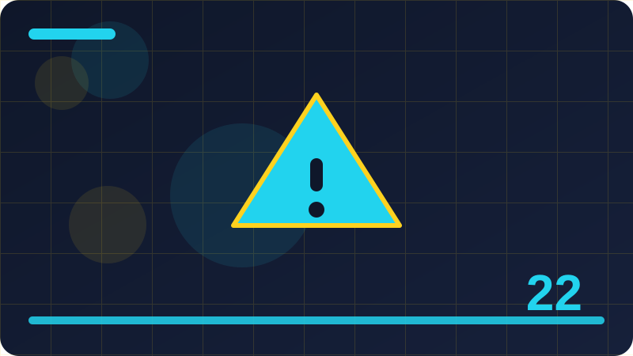

Chapter 22 — Debugging and Logging

Section 1: What Debugging Really Is
Debugging is the process of finding out why a program does something different from what you intended, and then fixing the cause, not just the symptom. Beginners often think of debugging as a frantic activity: changing code at random, re-running the program, and hoping the error disappears. Experienced developers treat it as an investigation. They start with evidence, form a hypothesis about what is wrong, test that hypothesis, and only then change the code. That disciplined approach is slower in the first minute and much faster overall, because random changes can hide a bug, introduce a new one, or fix a symptom while leaving the cause intact, which guarantees the bug will return in a different form later.
A useful way to think about debugging is as a mismatch between two stories: the story you believed when you wrote the code, and the story the computer actually follows when it runs the code. Your job is to find where those stories diverge. Perhaps you assumed a list was sorted when it was not, assumed a variable held a number when it held text, or assumed a function was called when it was actually skipped by a condition. Each assumption is a candidate for the divergence, and debugging is the work of checking assumptions one by one until you find the false one. That is why debugging feels like detective work: you gather clues, eliminate suspects, and narrow the search until only one explanation remains.
Debugging also requires a clear statement of the problem. Vague statements like it does not work are not debuggable, because they do not say what should happen, what actually happens, and under what conditions. A debuggable statement is specific: when I enter a quantity of zero, the program crashes with a division error, but I expected it to show a message saying the quantity must be positive. That statement contains the input, the actual behaviour, the expected behaviour, and the difference between them, which is enough to start an investigation. Practise turning vague complaints into specific statements, even when you are debugging your own code, because the act of specifying the problem often reveals its cause, or at least points at the area to examine first.
Finally, debugging is a normal part of programming, not a sign of failure. Every program contains bugs, because programs are written by people who cannot hold every detail of a complex system in mind at once. Professional developers spend a large part of their time debugging, and they treat it as a skill to develop, not as an embarrassment to hide. The developers who debug well are not those who never make mistakes, but those who have good habits for finding mistakes: reproducing reliably, reading messages carefully, narrowing systematically, and verifying fixes thoroughly. Those habits are what this chapter teaches, alongside logging, which is the practice of leaving a trail that makes future debugging possible.
Check: Why is a specific problem statement more debuggable than a vague statement like "it does not work"?
Section 2: Reproduce the Problem First
Before you change any code, reproduce the problem reliably. A reproducible problem is one you can trigger on demand, with known inputs, and observe the same wrong behaviour each time. Reproducibility matters because it gives you a test for your fix: if you can trigger the bug before the fix and cannot trigger it after, the fix probably worked. Without reproducibility, you may change code, run the program once, see the right result by chance, and believe the bug is fixed, when in fact the conditions that trigger it simply did not occur in that run. That false confidence is dangerous, because the bug will reappear later, perhaps for a user, under conditions you did not recreate.
Reproducing a problem often means simplifying it. Start with the full scenario that produced the bug, then remove irrelevant details one at a time, checking after each removal whether the bug still occurs. If it does, the removed detail was irrelevant, and you can discard it. If it disappears, the removed detail was part of the trigger, and you should restore it and investigate why. This simplification process, sometimes called minimising, leads to the smallest case that still shows the bug, which is easier to understand, easier to discuss with others, and easier to turn into a regression test. A minimal case also helps you distinguish between a bug in your code and a problem with the environment, because a minimal case that fails on a clean setup points at the code, while a case that only fails in a complex environment points at the environment.
Keep notes as you reproduce, even brief ones. Record the input, the steps, the actual result, and the expected result, so that you do not need to rediscover them later. Notes also help when you ask for help, because they let someone else reproduce the problem without guessing at your steps. If the problem is intermittent, meaning it sometimes occurs and sometimes does not, notes become even more important, because patterns may emerge over several occurrences: perhaps it fails only with certain data, only after the program has run for a while, or only when another program is also running. Intermittent bugs are the hardest to debug, and careful notes, combined with logging, are often the only way to find their pattern.
If you cannot reproduce a problem, be honest about that, and do not pretend a fix works when you have no way to check it. Instead, add logging or tests that would capture the problem if it recurs, review the code in the area where the problem was reported, and look for assumptions that could fail under conditions you have not tried. Sometimes a bug cannot be reproduced because the original conditions are gone, such as data that has been deleted or a state that has changed. In that case, the best you can do is to make the code more robust in the suspected area, add checks that would catch the problem earlier next time, and monitor for recurrence. Reproducibility is the ideal, and when it is unattainable, acknowledge the gap and mitigate it, rather than claiming a fix you cannot verify.
Check: Why should you reproduce a bug before changing code, and what does reproducibility give you for verifying a fix?
Section 3: Reading Error Messages Carefully
Error messages are the program's way of telling you what went wrong, and reading them carefully is the single most useful debugging skill. A Python error message typically includes the type of error, a description of what happened, and a traceback showing where it happened. Beginners often react to an error message with panic, or skip it entirely and start changing code, but the message usually contains enough information to point at the problem directly. Slow down, read the last line first, because that is where the error type and description live, and then read the traceback to find where in your code the error occurred. That two-step reading, last line then location, turns an intimidating block of text into a focused clue.
Error types are a vocabulary worth learning. A name error means a variable or function name was used before it was defined, or was misspelled, or is out of scope. A type error means an operation was applied to a value of the wrong type, such as adding a number to text. A value error means the type was right but the value was inappropriate, such as converting text that is not a number. An index error means a list was accessed beyond its length, and a key error means a dictionary was accessed with a missing key. Each type suggests a different kind of investigation: name errors point at spelling and scope, type errors point at data flow, value errors point at input validation, and index or key errors point at collection handling. Learning this vocabulary lets you translate an error message into a hypothesis about the cause in seconds.
The traceback adds location to the type. It lists the chain of function calls that led to the error, with the most recent call last, and it shows the file and line number for each call. Your own files are usually the most relevant, because they contain the code you wrote, while library files in the middle of the traceback are usually just the machinery through which your code's mistake surfaced. Focus on your files first, and look at the line that failed, asking what values were involved and what assumption that line made. If the line is a function call, the problem may be in the arguments passed, not in the function itself, and the traceback's earlier lines will show where those arguments came from. Following the chain backwards, from failure to cause, is the core traceback skill.
Finally, copy error messages exactly when you need help or when you search for explanations. A paraphrased error, such as it said something about a list, is far less useful than the exact message, because the exact wording distinguishes between similar errors and helps others recognise the problem. Keep the full message, including the error type and the relevant traceback lines, and do not be embarrassed by it. Every developer sees error messages constantly, and asking for help with a clear, exact message is a sign of professionalism, not of weakness. The more precisely you report an error, the more precisely others can help, and the faster you will learn to interpret similar messages yourself in future.
Check: When reading a Python error message, why should you read the last line first, and what does it tell you?
Section 4: Understanding Tracebacks
A traceback is a record of the path the program took to reach an error, and understanding how to read it transforms debugging from guesswork into navigation. When an error occurs, Python prints a traceback that lists each active function call, starting from the entry point of the program and ending with the line where the error was raised. Each entry, called a frame, shows the file name, the line number, and the function name, along with the source line itself. Reading a traceback from top to bottom follows the program's journey into the error, while reading from bottom to top follows the investigation backwards, from the failure to its origin. Both directions are useful, but the bottom, where the error actually occurred, is usually the best place to start.
The bottom frame is the most specific clue, because it shows the operation that failed. If the bottom frame is in your code, the problem is likely there, or in the values that reached that line. If the bottom frame is in library code, the problem is likely in how your code called that library, with wrong arguments or in a wrong state, and the frame above it, which is in your code, shows the call that triggered the library failure. That distinction matters, because fixing library code is not your job, and attempting to do so is a distraction. Instead, look at your call, check its arguments, and ask whether they match what the library expects. Library frames are signposts, not suspects, in most debugging.
Tracebacks can be long, especially when a program uses several layers of functions or libraries, and length can be intimidating. The skill is to skim for your own files, ignoring library frames unless they are relevant, and to focus on the frames that show your code's decisions. A traceback with twenty frames may contain only three frames from your code, and those three tell the story: which function you called, with what purpose, and where it went wrong. Highlighting or noting those frames, mentally or on paper, gives you a short, manageable chain to investigate, rather than a wall of text. With practice, you will learn to spot your files quickly, even in a long traceback, and to treat the rest as context.
Tracebacks also appear in logs and in test failures, where they serve the same purpose: showing the path to a failure. When you log an exception, including its traceback preserves the investigation trail, which is far more useful than logging only the error message. When a test fails with an error, its traceback shows both the test's line and the program's lines, letting you see the interaction between test and code. Learning to read tracebacks in all these contexts, not just in terminal output, makes you a faster debugger, because you can follow a failure from any report back to its cause. Keep tracebacks, read them bottom-up for the failure and top-down for the journey, and let them guide your investigation rather than overwhelming it.
Check: In a long traceback, why are the frames from your own files usually more relevant than library frames?
Section 5: Print Debugging: Uses and Limits
Print debugging, adding temporary print statements to show values at key points, is the most accessible debugging technique, and it remains useful throughout a career, despite more advanced tools. Its strength is simplicity: you do not need to learn a new tool, you can add a print anywhere, and you can see the program's actual values as it runs, which often reveals an assumption that was wrong. For example, printing a variable before a condition shows whether the condition is seeing the value you expected, and printing inside a loop shows how values change on each iteration. When you are confused about what a program is doing, a well-placed print can resolve the confusion in seconds, by replacing speculation with observation.
Print debugging has limits that become apparent as programs grow. Prints scattered through code are easy to forget and remove, and a forgotten print can clutter output, confuse users, or even leak sensitive information if it prints data that should stay private. Prints also change the program's timing and output, which can mask or alter the very behaviour you are investigating, especially in programs that produce output for users or that depend on timing. In larger programs, adding prints everywhere produces so much output that finding the relevant lines becomes a search problem of its own. For these reasons, print debugging is best used sparingly and temporarily: add a few prints in the suspected area, observe the results, fix the problem, and remove the prints before considering the work done.
A disciplined way to use prints is to print labelled values, not bare values. A print that outputs just a number tells you little when you later read the output, because you cannot tell which variable it came from or which iteration produced it. A print that labels the value, such as printing the variable name alongside its value, or printing a message that says which branch was taken, makes the output self-explanatory. Print inputs and outputs around a suspicious function, print loop variables with their iteration count, and print the result of a condition alongside the values it compared. Labelled prints turn a stream of numbers into a readable story of the program's execution, which is much easier to reason about.
Finally, treat print debugging as a stepping stone to logging and to debugger tools, not as a permanent substitute. Logging, covered later in this chapter, provides a structured, controllable way to record values, with levels and destinations that prints lack. Debugger tools, covered next, let you inspect values without modifying code at all. Print debugging remains valuable for quick checks and for situations where other tools are unavailable, but for persistent, structured, or production debugging, logging and debuggers are superior. Use prints when they are the fastest route to an answer, remove them when they have served their purpose, and graduate to logging when the information needs to persist beyond a single debugging session.
Check: Why should print statements used for debugging be labelled and removed after use?
Section 6: Using a Debugger
A debugger is a tool that lets you pause a program while it is running, inspect its state, and step through its execution line by line, without modifying the code with prints. The core concepts are breakpoints, stepping, and inspection. A breakpoint is a marker you place on a line, telling the debugger to pause when execution reaches that line. Stepping means moving forward one line at a time, or stepping into a function call to follow its execution, or stepping over a call to run it as a whole. Inspection means looking at the current values of variables, the call stack, and the program's state while it is paused. Together, these concepts give you a live view of a program's behaviour, which is far more precise than inferring behaviour from output alone.
Learning a debugger takes a small investment, but it pays off quickly for bugs that prints struggle with. A bug that only occurs after many loop iterations, for example, is tedious to debug with prints, because you must sift through many lines of output to find the relevant iteration. With a debugger, you can set a breakpoint with a condition, such as pausing only when a variable reaches a certain value, and the program will run normally until that condition is met, then pause for inspection. A bug involving several functions calling each other is also easier with a debugger, because you can step through the calls and watch values change as they pass between functions, rather than reconstructing the flow from printed output. The debugger shows you the program's actual journey, not a summary of it.
A typical debugger session follows a pattern. You start by reproducing the problem, then you set a breakpoint near the suspected area, run the program, and wait for it to pause. When it pauses, you inspect the variables, checking whether they hold the values you expected. If they do, you step forward, watching how they change, until you find the point where they diverge from expectation. That point is near the bug, because it is where the program's story first differs from yours. You can then examine the code at that point, form a hypothesis, and test it by changing a value temporarily in the debugger, or by stepping through alternative paths, to see whether the hypothesis explains the failure. This interactive investigation is difficult to replicate with prints alone.
Do not be discouraged if a debugger feels unfamiliar at first. Start with the simplest operations: set a breakpoint, run, inspect a variable, step over a line, and continue. Practise those five operations on a small program with a known bug, until they feel natural, before learning advanced features like conditional breakpoints or watch expressions. Most development environments include a debugger, and the standard library also provides one that can be used from the terminal, so you do not need special software to start. The debugger is not a replacement for thinking; it is a tool that makes thinking more concrete, by showing you the program's state at the moment you need to see it, rather than asking you to imagine it.
Check: What are breakpoints, stepping, and inspection, and how do they work together in a debugger?
Section 7: Inspecting Variables and State
Inspecting variables means looking at the actual values held by names at a particular moment, and comparing them with the values you expected. Many bugs are simply a variable holding a different value from the one the programmer assumed, and inspection reveals that difference directly. The assumption might be about type: you expected a number but the variable holds text. It might be about content: you expected a list with three items but it holds two, or holds items in a different order. It might be about identity: you expected two names to refer to the same object, but they refer to different objects, or vice versa. Each of these mismatches points at a different kind of cause, and inspection is how you discover which mismatch you are dealing with.
State is a broader concept than a single variable. The state of a program includes all its variables, the contents of its data structures, the current position in a loop or a file, and the values of any settings or flags that affect behaviour. When debugging, you often need to inspect several pieces of state together, because a bug may arise from their interaction, not from any one value alone. For example, a loop may behave correctly for most iterations but fail on one, because a combination of the loop counter and a list's contents reaches a special case. Inspecting only the counter, or only the list, would miss the interaction. A debugger's variable view, which shows many variables at once, is helpful here, as is printing a small summary of related state at a key point, so that you can see the combination that triggers the bug.
Timing matters in inspection. A variable's value changes over time, so inspecting it at the wrong moment can mislead you. If you inspect a variable after a loop has finished, you see its final value, not the value that caused a problem during the loop. If you inspect it before a function is called, you see the caller's value, not the value inside the function. To inspect effectively, pause or print at the moment the value matters: just before a condition is evaluated, just after a calculation, or inside the loop iteration where the problem occurs. Conditional breakpoints, which pause only when a condition is true, help you catch the right moment without pausing on every iteration. Thoughtful timing turns inspection from a snapshot into a story, showing how state evolves towards the bug.
Finally, inspect state with a hypothesis in mind. Before you look, state what you expect to see, even briefly, so that a mismatch stands out. If you inspect without expectations, you may look at correct values and miss the one wrong value among them, because everything looks plausible in isolation. If you inspect with expectations, the wrong value announces itself by differing from what you predicted. This habit, predicting before inspecting, is a small discipline that greatly improves debugging speed. It also helps you learn: each time your prediction is wrong, you discover an assumption you held that was false, and correcting that assumption improves your understanding of the program, not just your fix for the current bug.
Check: Why should you state what value you expect before inspecting a variable during debugging?
Section 8: Narrowing Down with Halving
When a bug could be anywhere in a large program, or in a long sequence of steps, narrowing down systematically saves far more time than reading everything from the start. Halving, also called binary search debugging, is a technique for narrowing quickly. You pick a midpoint in the program or in the data, check whether the bug occurs before or after that point, and then focus on the half that contains the bug, repeating the process until the search area is small. Each check halves the area to search, so even a large program can be narrowed to a few lines in a surprisingly small number of steps, provided you can test whether the bug is present at each midpoint.
A concrete example helps. Suppose a program processes a list of a thousand records and produces a wrong result, but you do not know which record causes the problem. Instead of checking records one by one, you can test the first five hundred records alone: if the result is still wrong, the problem is in the first half; if it is correct, the problem is in the second half. Repeat with the relevant half, halving each time, until you isolate the single record or small group that triggers the bug. The same idea applies to code: if a function has many steps, check the intermediate state halfway through, and ask whether it is already wrong. If it is, the bug is in the first half; if it is correct, the bug is in the second half. Halving works whenever you can define a check that tells you whether the bug is already present at a given point.
Halving requires that you can run the program or the function on part of the input or up to a certain point, which is not always straightforward. Sometimes you need to add a temporary check, such as printing intermediate state or stopping early, to perform the halving test. That effort is worthwhile, because it converts a vague search into a series of decisive tests. It also requires that the bug is deterministic, meaning it occurs reliably under the same conditions. For intermittent bugs, halving is harder, because a single test may not reveal whether the bug is present, and you may need to run each half several times or use logging to capture the conditions. Even then, halving provides a structure for the investigation, rather than leaving you to guess.
The broader lesson of halving is to divide and conquer, rather than to read linearly. Linear reading, from the start of a program to the end, is slow and often unproductive, because most of the code is correct and irrelevant to the bug. Dividing the problem, testing each part, and discarding the parts that are correct focuses your attention where it matters. This principle applies beyond code: to data, to configuration, to steps in a workflow, and to versions of a program, where you can test an earlier version to see whether the bug existed then, halving the range of changes that could have introduced it. Learn to ask, at each step, how can I rule out half of the possibilities with one test, and debugging will become faster and less frustrating.
Check: How does halving narrow a bug's location faster than checking possibilities one by one?
Section 9: Explaining the Problem Out Loud
Explaining a problem out loud, often called rubber-duck debugging, is a surprisingly effective technique, despite its playful name. The idea is simple: describe the problem, the code, and what you expected to happen, in plain words, as if explaining it to someone else, even if that someone else is an inanimate object, a colleague, or simply yourself speaking aloud. The act of explaining forces you to articulate assumptions that were previously vague or unexamined, and in doing so, it often reveals the false assumption that is causing the bug. Many developers have experienced the moment when, halfway through explaining a bug, they suddenly see the solution, before the listener has said a word. The explanation itself is the debugging tool.
The reason explaining works is that writing and speaking use different mental processes from silent thinking. When you think silently, you can skip over details, gloss over gaps, and hold contradictory ideas without noticing, because thought is fluid and forgiving. When you explain, you must sequence ideas logically, define terms, and connect steps, which exposes gaps and contradictions. For example, explaining a loop forces you to say what happens on the first iteration, what changes on each iteration, and when the loop stops, and any of those statements may reveal a mistake in your understanding. Explaining a condition forces you to say exactly when it is true and when it is false, which may reveal that it is true in a case you had not considered. The discipline of articulation is what does the work.
To use this technique well, explain concretely, not abstractly. Do not say the function processes the data; say the function takes a list of prices, adds tax to each, and returns a new list, and then walk through a specific example, with specific numbers, step by step. Use a small example that you can work through by hand, and compare your hand-worked result with the program's actual result at each step, noting where they diverge. That divergence is the bug's location, or close to it. If you explain only in general terms, you may miss the specific detail that matters, because general explanations can hide specific mistakes. Concrete examples, worked slowly, are the key.
Explaining to a real person adds another benefit: questions. A listener who does not share your assumptions will ask questions that challenge them, such as why you assumed a value would be a number, or why you thought a function would be called at that point. Those questions, even if they seem naive, often point directly at the bug. Do not be embarrassed to ask for help in this way, and do not wait until you are completely stuck. Explaining early, when you are confused but not yet frustrated, is more productive than explaining after hours of fruitless searching, because you are still open to new ideas. Whether your listener is a colleague, a friend, or a rubber duck, the act of explaining clearly is a powerful debugging step, and it costs nothing but a few minutes of careful speech.
Check: Why does explaining a bug out loud often reveal its cause, even before anyone replies?
Section 10: Common Error Types in Python
Python's error types form a vocabulary for debugging, and learning the most common ones will make error messages far less mysterious. A SyntaxError means the code itself is not valid Python, usually because of a missing colon, parenthesis, or quotation mark, or because of incorrect indentation. Syntax errors are detected before the program runs, so the program does not start at all, and the message points at or near the line with the problem, though the actual mistake may be on the previous line, such as an unclosed bracket. Reading the line and the line before it, and checking brackets and indentation, usually resolves a syntax error quickly. It is a mistake in writing, not in logic, and it is the easiest kind of error to fix once spotted.
A NameError occurs when a name is used that has not been defined, often because of a misspelling, because a variable was defined in a different scope, or because the definition was skipped by a condition. The message names the undefined name, which is a direct clue: search for that name, check its spelling everywhere it appears, and check where it was supposed to be defined. An AttributeError is similar, but for attributes: an object does not have the attribute you tried to access, often because the object is of a different type than expected, or because the attribute name is misspelled. Both errors point at names, and both are fixed by aligning the name used with the name defined, or by ensuring the object is of the expected type.
TypeError and ValueError are the next pair to learn. A TypeError means an operation was used on an inappropriate type, such as adding a number and text, calling a value that is not a function, or passing the wrong number of arguments to a function. A ValueError means the type was acceptable but the value was not, such as trying to convert the text hello to a number, or removing an item from a list that does not contain it. The distinction guides your investigation: TypeError suggests checking where a value's type went wrong, perhaps through input or a missing conversion, while ValueError suggests checking where a value's content went wrong, perhaps through validation or a boundary case. Both are common, and both are usually fixed near the line that raised them, or at the point where the problematic value was created.
IndexError, KeyError, and ZeroDivisionError complete the common set. IndexError means a list, tuple, or string was accessed with an index outside its range, often because a list was shorter than assumed or a loop ran too far. KeyError means a dictionary was accessed with a missing key, often because the key was misspelled or the dictionary was not populated as expected. ZeroDivisionError means a division or modulo operation used zero as the divisor, often because a total or count was zero in an edge case. Each of these errors, read carefully, tells you what kind of assumption failed: about length, about keys, or about a divisor. Learning to translate error types into assumption types is a core debugging skill, and it turns error messages from obstacles into guides.
Check: What is the difference between a TypeError and a ValueError, and what does each suggest about the cause?
Section 11: Type Errors and Data Flow
Type errors arise when data flows through a program in a form different from what the code expects, and debugging them means tracing that flow backwards to where the type went wrong. A function that expects a number may receive text, because input from a user or a file is always text initially, and the conversion to a number was missed, failed silently, or happened in the wrong place. A function that expects a list may receive a single value, because the caller passed one item instead of a collection. A function that expects a dictionary may receive a list, because the data was structured differently upstream. In each case, the error appears at the point where the wrong type is used, but the cause is earlier, where the value was created or passed, and tracing backwards is essential.
A practical way to trace data flow is to check types at boundaries: where data enters the program, where it passes between functions, and where it is stored or retrieved. At each boundary, ask what type the data should be, and verify that it actually is that type, by inspecting it or by adding a temporary check. Boundaries are where type mistakes most often occur, because different parts of a program may make different assumptions about the same data. For example, one function may return a number as text for display, while another function expects a number for calculation, and passing the display value to the calculation function causes a type error. Making types explicit at boundaries, through clear naming, documentation, or conversion, prevents such mismatches, and checking types at boundaries during debugging reveals them quickly.
Conversion is a frequent source of type errors, and it deserves careful attention. Converting text to a number can fail if the text is not a valid number, converting a number to text can succeed but produce a value that later code treats as a number, and converting between collection types can lose information, such as order or duplicates. When debugging a type error involving conversion, check both the conversion itself and the value being converted: was the input valid, was the conversion the right one, and was the result used in the way intended? A conversion that succeeds but produces a surprising value, such as converting a decimal text to an integer and losing the fractional part, may not raise an error immediately, but may cause a logic error later, which is harder to trace. Explicit, well-placed conversions, with validation of the input, reduce both kinds of problem.
Finally, use type hints and simple checks as debugging aids, even if you are not yet using a full type-checking tool. A function that declares it expects a number and returns a number makes its contract visible, and a reader can compare that contract with the actual calls to spot a mismatch. A temporary check that prints or asserts the type of a value at a suspicious point can confirm or refute a hypothesis about data flow in seconds. Over time, developing a habit of thinking about types as data flows through a program, rather than as isolated values, will make type errors rarer and easier to fix, because you will design boundaries more carefully and trace problems more systematically when they do occur.
Check: Why does a type error often appear far from its cause, and how does tracing data flow backwards help?
Section 12: Index and Key Errors
Index and key errors both mean that code tried to access a collection with a position or label that does not exist, and both usually indicate a wrong assumption about the collection's contents. An index error, for a list, tuple, or string, means the index was outside the valid range, which runs from zero to one less than the length. Common causes include assuming a list is longer than it is, using an index that was calculated from another value that changed, or running a loop one step too far. A key error, for a dictionary, means the key was not present, which usually means the key was misspelled, the dictionary was not populated as expected, or the code assumed a key would always be present when it is only sometimes present. Both errors ask the same debugging question: what did you assume about this collection, and why is that assumption false here?
Debugging an index error starts with the collection's length. Inspect the collection and its length at the point of failure, and compare the failing index with that length. If the index is only slightly too large, the problem may be an off-by-one error in a loop or calculation, which is a common and fixable mistake. If the index is far too large, or negative in an unexpected way, the problem may be that the collection is much shorter than expected, perhaps because it is empty, or because earlier code filtered it more than intended. If the collection is empty, the question becomes why it is empty: was it never populated, was it populated with different data, or was it cleared earlier? Following that chain backwards, from empty collection to its source, usually reveals the cause.
Debugging a key error follows a similar pattern, but with keys instead of positions. Inspect the dictionary's keys at the point of failure, and compare the missing key with those present. If the missing key is similar to a present key, differing only by spelling, case, or whitespace, the problem is likely a mismatch in how the key was written or constructed. Check how the dictionary was created, and whether the code that creates it handles all cases, including edge cases where a key might legitimately be absent. Decide, as a design matter, whether a missing key should be an error, a default value, or a signal to handle differently, and make that decision explicit in the code, rather than letting it crash unexpectedly.
Both kinds of error benefit from defensive habits that also help debugging. Before accessing an index, consider whether the index could be out of range, and handle that case explicitly if it is possible. Before accessing a dictionary key, consider whether the key could be missing, and use a safe access method or an explicit check if it could. These habits do not just prevent crashes; they make the program's assumptions visible, so that when an error does occur, it is clearer whether the assumption was wrong or the data was wrong. A program that checks its assumptions explicitly is easier to debug than one that assumes silently, because its checks document what it expects and fail in informative ways when those expectations are not met.
Check: How does inspecting a collection's length or keys at the failure point help debug an index or key error?
Section 13: Value Errors and Invalid Input
Value errors occur when a value has the right type but the wrong content for an operation, and they are often a sign that input validation is missing or incomplete. A classic example is converting text to a number when the text does not represent a number, such as trying to convert the word ten, or an empty string, or text with extra spaces and symbols. The type, text, is acceptable for a conversion operation in general, but the specific value is not convertible, so the operation raises a value error. Debugging such an error means asking where the invalid value came from, whether it should have been validated earlier, and what the program should do when it encounters such a value: reject it with a clear message, handle it with a default, or ask for corrected input.
Input from users, files, and external sources is the most common source of value errors, because external data is rarely as clean as textbook examples. Users type unexpected characters, files contain blank lines or malformed records, and data from other systems may use different formats. A program that assumes external data is always valid will encounter value errors frequently, and each one is an opportunity to improve validation. The debugging question is not just what value caused this error, but why the program allowed that value to reach the operation that failed. Was there a validation step that should have caught it? Was validation present but incomplete, covering some invalid cases but not this one? Was the value transformed in a way that made it invalid, such as stripping characters or changing its format? Answering these questions leads to a fix at the right level: better validation, better transformation, or better handling, rather than just catching the error and hiding it.
Value errors can also arise from internal logic, not just external input. A function that removes an item from a list will raise a value error if the item is not in the list, which may indicate that the program's model of the list's contents is wrong, or that an item was already removed, or that the item was never added. In these cases, debugging involves checking the program's internal state: what does the list actually contain, what does the text actually say, and why did the code assume otherwise? The error is a clue that the program's model of its own data is out of step with reality, and correcting that model is the real fix.
When fixing value errors, distinguish between fixing the immediate error and fixing the underlying validation. Catching a value error and continuing silently may hide a data problem that will cause a stranger failure later, while rejecting the invalid value with a clear message lets the user or the caller correct it. In some cases, a value error indicates a bug in the program's own logic, not in the input, and the fix belongs in the logic, not in validation. The debugging process, tracing the invalid value to its source and asking whether it should have been prevented, corrected, or handled, guides you to the right level of fix. A value error handled thoughtfully, with validation and clear messages, turns a crash into a helpful interaction, which is a sign of a mature program.
Check: Why does a value error often indicate missing or incomplete validation earlier in the program?
Section 14: Logic Errors That Do Not Crash
Logic errors are the most challenging bugs, because the program runs without crashing, produces output, and appears to work, yet the output is wrong. There is no error message to read, no traceback to follow, and no crash to point at the problem. The only evidence is that the result differs from what you expected, which may be subtle: a total that is slightly off, a list that is missing one item, a sorting order that is almost right, or a message that appears in the wrong situation. Debugging logic errors therefore starts with noticing the discrepancy, which requires knowing what the correct result should be, through hand calculation, a test, or a specification. Without an expected result to compare against, a logic error is invisible, which is why tests and worked examples are so important for catching them.
Once you notice a discrepancy, the debugging process is similar to other debugging, but with less guidance. You must form hypotheses about where the logic went wrong, and test them by inspecting intermediate values, because the program will not point at the error for you. A useful approach is to work through a small example by hand, step by step, and compare your hand-worked intermediate values with the program's actual intermediate values, obtained through prints, logging, or a debugger. The first point where they diverge is near the bug, because it is where the program's logic first departs from correct logic. That point may be a condition that evaluates incorrectly, a calculation that uses the wrong variable, a loop that runs the wrong number of times, or an operation that is applied in the wrong order. Each of these is a logic mistake that produces no error, but produces a wrong result.
Common logic mistakes have patterns worth recognising. Using the wrong operator, such as using or instead of and, or using greater-than instead of greater-than-or-equal, produces a result that is correct for most inputs but wrong at boundaries. Updating a variable in the wrong order, or forgetting to update it at all, produces a result that drifts from correct over time, such as a total that lags behind or a counter that never advances. Reusing a variable for a different purpose, without resetting it, produces a result that depends on previous runs or previous iterations in an unintended way. Recognising these patterns speeds debugging, because you can check for them specifically when a result is wrong, rather than reading all the code blindly.
Preventing logic errors is harder than preventing crashes, because logic errors arise from misunderstanding, not from violating a language rule. Clear code, with meaningful names, small functions, and explicit steps, reduces logic errors, because it makes the intended logic visible and easier to compare with the actual logic. Tests, especially tests with hand-calculated examples and edge cases, catch logic errors by comparing actual results with expected results across many cases. Code review, where another person reads the logic and asks whether it matches the intention, catches logic errors that the author overlooked, because a fresh reader does not share the author's assumptions. Logic errors remind us that a program that runs is not necessarily a program that is correct, and that correctness requires evidence, not just absence of crashes.
Check: Why are logic errors harder to debug than errors that crash with a message?
Section 15: Off-by-One Errors
Off-by-one errors are mistakes where a count, index, or boundary is one more or one less than it should be, and they are among the most common bugs in programming. They arise because humans and computers count differently in subtle ways: humans often count starting from one, while Python indexes start from zero; a range that should include an endpoint may exclude it, or a loop that should run a certain number of times may run one too many or one too few. The result is often a program that works for most inputs but fails at a boundary, such as the first or last item, the first or last iteration, or the threshold value itself. Off-by-one errors are logic errors that sometimes cause crashes, through index errors, and sometimes cause silent wrong results, through missing or extra items, which makes them doubly tricky.
Recognising off-by-one errors requires careful attention to boundaries. When you write a loop, ask explicitly: what is the first value, what is the last value, and how many times does the loop run? When you slice a list, ask: does the slice include the start index and exclude the end index, and is that what you intended? When you check a threshold, ask: does the threshold value itself qualify, or only values above or below it? These questions, asked at writing time, prevent many off-by-one errors, and asked at debugging time, they help locate them. A test that checks the first item, the last item, and the items just inside and outside a boundary is the best defence, because it makes off-by-one mistakes visible, whereas a test with only middle values may pass despite the error.
Debugging an off-by-one error often involves a small example worked by hand. Take a list with three items, and trace through the loop or slice, noting the index at each step and the item it refers to. Compare your trace with the program's actual behaviour, obtained through inspection or prints, and look for the step where the program's index differs from yours by one. That difference is the error, and it usually points at a loop condition, a range endpoint, or a slice boundary that needs adjusting by one. Be careful to fix the cause, not just the symptom: changing a loop to run one more time may fix the current case but break another, if the real problem is in how the loop's bounds were calculated. Understand why the count is off, then adjust the calculation that produces it.
Off-by-one errors also teach a broader lesson about precision in programming. Natural language is often ambiguous about boundaries: does up to ten include ten, does first ten items mean items one to ten or zero to nine, does over fifty include fifty? Code must choose, and that choice must be consistent and tested. When you encounter an off-by-one error, document the intended boundary in a test, with a name that states it, so that future readers know the choice was deliberate. Over time, a habit of specifying boundaries precisely, in both code and tests, will reduce off-by-one errors dramatically, because the ambiguity that causes them will be confronted at writing time, rather than discovered at debugging time, when it is more expensive to fix.
Check: Why do off-by-one errors often pass tests with middle values but fail at boundaries?
Section 16: Loop Bugs
Loops are a frequent source of bugs, because they involve repetition, changing state, and termination conditions, all of which can go wrong in subtle ways. A loop that never terminates, called an infinite loop, is the most dramatic loop bug: the program runs forever, or until it is stopped, without producing a result. Infinite loops usually occur because the loop's condition never becomes false, because the variable that should change towards termination is not updated, or is updated in the wrong direction, or because the condition itself is wrong. Debugging an infinite loop starts with identifying the termination condition and the update step, and checking whether the update actually moves the state towards termination on every iteration. If it does not, the loop cannot end, and the fix is to correct the update or the condition.
A loop that terminates too early or too late is a subtler bug, often related to off-by-one errors, but also to conditions that are checked at the wrong time or with the wrong comparison. A loop that should process all items but stops one item early may have a condition that excludes the last item, or a break statement that triggers too soon. A loop that processes one item too many may have a condition that includes an extra iteration, or a failure to break when it should. The iteration where the trace diverges from intention is where the bug lies, and it usually points at the condition or at a break or continue statement.
Loops that modify the collection they iterate over are another common source of bugs. Removing or adding items to a list while iterating over it can cause items to be skipped, processed twice, or cause an error, because the iteration's internal position no longer matches the collection's contents after modification. The safe approach is usually to iterate over a copy, or to collect changes and apply them after the loop, rather than modifying the collection during iteration. Debugging such a bug involves recognising the pattern: if items are mysteriously skipped, check whether the loop modifies the collection it iterates over, and if it does, restructure it to avoid that modification. This pattern is worth memorising, because it is a classic loop bug that is easy to introduce and confusing to debug without knowing the pattern.
Finally, loops with nested structure, or loops that interact with external state, such as files or user input, can have bugs that are harder to isolate, because the loop's behaviour depends on more than its own variables. A loop that reads from a file may fail because the file's contents changed, a loop that depends on user input may fail because the input was unexpected, and a nested loop may fail because the inner loop's variables interfere with the outer loop's. Debugging such loops requires isolating the loop from its external dependencies, by testing it with controlled, small inputs, and by checking each level of nesting separately. Small, focused loop tests, with known inputs and expected outputs, are the best defence against loop bugs, because they make the loop's behaviour visible and checkable, iteration by iteration.
Check: Why is modifying a list while iterating over it a common source of loop bugs?
Section 17: Mutation and Shared State Bugs
Mutation means changing a value or a data structure in place, and shared state means that more than one part of a program refers to the same object, so that a change made through one reference is visible through the others. Together, mutation and sharing are a powerful source of bugs, because a change that seems local can have distant effects. A function that appends to a list passed as an argument, for example, changes the caller's list, even if the caller did not expect that change. A function that modifies a dictionary shared between two parts of a program can affect the other part in ways that are hard to trace, because the connection between the parts is not visible in the code at the point of modification. Debugging such bugs requires understanding aliasing: when two names refer to the same object, and when they refer to different objects that happen to have equal values.
Aliasing bugs are subtle because equality and identity are different. Two lists can have equal contents but be different objects, so changing one does not affect the other. Two names can refer to the same list, so changing the list through one name affects the other name's view of it. A bug arises when a programmer assumes two names are independent, but they are actually aliases, or assumes they are aliases, but they are actually independent. Debugging involves checking identity, not just equality: are these two names referring to the same object, or to different objects with the same contents? Inspection tools can show identity, and a simple test, modifying through one name and checking the other, can reveal aliasing directly. A function that uses a mutable object, such as a list or dictionary, as a default argument will share that object across all calls that do not supply the argument, because the default is created once when the function is defined, not afresh on each call. A call that modifies the default will therefore affect later calls, producing behaviour that depends on call history, which is confusing and hard to debug. The remedy is to use an immutable default, such as none, and create a fresh mutable object inside the function when needed. Recognising this pattern is important, because it is a classic Python bug that surprises even experienced developers, and it is a clear example of how shared mutable state can cause history-dependent bugs.
To debug mutation bugs, trace who modifies an object and when. Add logging or inspection at points where the object is modified, or search the code for operations that mutate the object, such as append, extend, pop, or assignment to an index or key. Ask whether each modification is intended, and whether the caller expects it. If a modification is unintended, the fix may be to return a new object instead of modifying in place, or to copy the object before modifying it, so that the caller's object is unaffected. If a modification is intended, the fix may be to document it clearly, so that callers know to expect it. In either case, making mutation explicit, through naming, documentation, or copying, turns a hidden side effect into a visible contract, which is easier to debug and easier to use correctly.
Check: How can two names referring to the same list cause a bug that equality alone would not reveal?
Section 18: Scope and Name Bugs
Scope determines where a name is visible and what value it refers to, and scope bugs arise when a name is used in a place where it refers to something different from what the programmer intended, or where it is not defined at all. A common scope bug is using a variable inside a function that was defined outside it, intending to modify the outer variable, but actually creating a new local variable that shadows the outer one, leaving the outer value unchanged. Another is using a loop variable after the loop, assuming it holds a meaningful value, when it actually holds the last value from the loop, or is undefined if the loop never ran. A third is misspelling a variable name, creating a new name that is undefined or that refers to a different variable, leading to a name error or, worse, to a logic error if the misspelled name happens to be defined elsewhere.
Debugging scope bugs starts with asking, for the name in question, where was it defined, and where is it being used? Trace the name's definition through the code, checking function boundaries, loop boundaries, and conditional branches that might skip the definition. If the name is defined inside a conditional branch, it may be undefined when that branch is not taken, leading to a name error on a later use. If the name is defined in a loop, it may be undefined if the loop runs zero times. If the name is defined in a function, it is local to that function and not visible outside it, unless it is returned or stored elsewhere. These are all scope rules that are easy to state but easy to violate when code grows complex, especially when functions and loops are nested.
Shadowing is a subtler scope bug, where a local name hides an outer name of the same spelling. The program runs without error, because the local name is defined, but it uses the local value instead of the outer value the programmer intended, producing a wrong result. Debugging shadowing involves checking, for each use of a name, which definition is actually in scope at that point, and whether that definition is the intended one. Renaming variables to be more distinctive, or reducing the scope in which a name is used, can prevent shadowing, by making it less likely that two different values share a name in overlapping scopes.
To prevent scope bugs, keep scopes small and names clear. Define variables close to where they are used, avoid reusing the same name for different purposes in overlapping scopes, and return values from functions explicitly rather than relying on outer variables. When debugging a name error or a surprising value, check scope first, before assuming a logic error, because scope is a common and fixable cause. A systematic scope check, tracing a name from its use back to its definition and confirming that the definition is in scope and is the intended one, resolves many bugs quickly, and it builds a habit of thinking about where names live, which is essential for writing correct programs as they grow larger and more complex.
Check: What is shadowing, and why can it cause a wrong result without raising an error?
Section 19: Import and Module Bugs
Import bugs occur when a program cannot find a module, finds the wrong module, or imports a module in a way that causes unexpected behaviour. The most common import error is a module not found error, which means Python could not locate the module in the places it searches. This can happen because the module's file is in a different folder, because the file name is misspelled, because the module is in a folder that is not recognised as a package, or because the program is run from a different working directory than expected, changing where Python looks. Debugging starts with checking the file's location, its name, and the working directory, and confirming that the import statement matches the file's actual name and location. Small differences, such as a hyphen versus an underscore, or a capital letter versus a lower-case letter, can cause an import to fail, because file names are exact.
Circular imports are a subtler import bug, where two modules import each other, directly or indirectly, creating a cycle that Python cannot resolve cleanly. When a circular import occurs, one module may be only partially initialised when the other tries to use it, leading to errors about names not being defined, or to behaviour that depends on import order. Debugging circular imports involves mapping the import graph: which module imports which, and where the cycle lies. The fix is usually to restructure the code, by moving shared definitions to a third module that both can import, or by moving an import inside a function so that it happens later, after both modules are initialised. Circular imports are a design signal, indicating that two modules are too tightly coupled, and restructuring to break the cycle often improves the design as well as fixing the error.
Another import bug is importing the wrong module with the same name. Python searches for modules in a specific order, and if a file in the current folder has the same name as a standard library module, it may shadow the standard module, causing surprising errors when code tries to use the standard module's features. Debugging such shadowing involves checking whether any project file shares a name with a standard module, and renaming the project file if it does. This is a good reason to avoid naming project files after common standard library modules, and to be aware of the search order when an import behaves unexpectedly.
Finally, import-time side effects can cause bugs that are hard to trace, because code that runs when a module is imported, such as top-level statements that read files, connect to services, or modify global state, runs as soon as the import happens, not when the module's functions are called. If that side-effect code fails, the import fails, even though the module's functions themselves are fine. If it succeeds but has unexpected effects, those effects can influence the rest of the program in confusing ways. The remedy is to keep import-time code minimal, limited to definitions, and to put executable code behind a guard that only runs when the module is executed directly, not when it is imported. That discipline makes imports predictable and debugging easier, because import failures then point at genuine module problems, not at side effects.
Check: How can a project file named the same as a standard library module cause a confusing import bug?
Section 20: Debugging with Small, Controlled Cases
Debugging with small, controlled cases is a general strategy that applies to almost every kind of bug, and it deserves emphasis because it is so effective. The idea is to replace a large, complex failing case with the smallest case that still fails, using data you control completely. A small case is easier to reason about, easier to trace by hand, and easier to discuss with others, and it often reveals the bug directly, because the irrelevant details that obscured it in the large case are stripped away. If a program fails on a file with a thousand lines, try a file with three lines that still fails. If it fails on a list with many items, try a list with two items that still fails. The smallest failing case is a powerful diagnostic tool, and finding it is often more than half the debugging work.
Controlled cases also let you test hypotheses quickly. Suppose you suspect a bug is caused by a particular kind of input, such as a negative number, an empty string, or a duplicate item. You can construct a small case containing exactly that input, run the program on it, and see whether the bug occurs. If it does, your hypothesis is supported, and you can focus on code that handles that input. If it does not, your hypothesis is refuted, and you can try another. This hypothesis-testing loop, with small cases as the tests, is far more efficient than reading all the code in the hope that the bug will stand out. It also produces a set of cases that can become regression tests, preserving the knowledge gained during debugging for future protection.
Small cases help with intermittent bugs too, though less directly. An intermittent bug, which occurs only sometimes, may be triggered by a rare combination of inputs or states that is hard to reproduce with a large, realistic case. By constructing small cases that isolate each factor, you can test whether a particular factor contributes to the bug, even if you cannot yet reproduce the full failure reliably. Logging can help here, by recording the inputs and state when the intermittent failure occurs, giving you clues about which small cases to try. Over time, a collection of small cases that each test one factor can reveal the combination that triggers the bug, even when the full case is elusive.
Finally, small cases make asking for help more effective. A helper who receives a thousand-line file and a vague description must spend a long time understanding the problem before they can help, while a helper who receives a ten-line example that reproduces the bug can often spot the cause immediately. Preparing a small, controlled case is therefore not just good debugging; it is good communication. It shows respect for the helper's time, and it often leads to a faster, more accurate answer. Make small-case debugging a habit: whenever you face a bug, your first step, after reproducing it, should be to shrink it, control it, and understand it in its smallest form, before attempting a fix.
Check: Why is finding the smallest failing case often more than half the debugging work?
Section 21: Isolating a Suspicious Function
Isolating a suspicious function means testing it on its own, outside the larger program, with known inputs and expected outputs, to determine whether the bug is inside the function or elsewhere. This isolation is valuable because a bug in a large program could be in any of many functions, and testing each function in isolation narrows the search quickly. To isolate a function, you need to call it directly, with inputs you control, and observe its output, without running the whole program. That may require importing the function in a small test script, or running it in an interactive session, or writing a temporary test, but the effort is small compared with the time saved by pinpointing the faulty function. Isolation turns a program-wide search into a function-level check.
Isolation works best when functions are small, pure, and independent, meaning they depend only on their arguments and return a result, without relying on global state or external services. Such functions are easy to isolate, because you can call them with any inputs and check their outputs directly. Functions that depend on global state, files, or services are harder to isolate, because you must recreate that state or those services to test them. That difficulty is itself useful feedback: if a function is hard to isolate, it may be too coupled to its surroundings, and refactoring it to accept its dependencies as parameters, or to separate its logic from its side effects, will make it both easier to test and easier to debug. Isolation therefore encourages better design, as well as faster debugging.
When you isolate a function and it behaves correctly, you have ruled out that function as the bug's location, and you can move on to the next suspect, or to the interaction between functions. When it behaves incorrectly, you have found the bug's area, and you can focus your investigation inside that function, using the techniques from earlier sections, such as inspecting intermediate values or tracing a small example. Either outcome is progress, because it reduces the search area. A common mistake is to skip isolation and to change code in several functions at once, hoping one of the changes fixes the bug. That approach may appear to work, but it leaves you unsure which change fixed it, and whether the fix was correct or merely masked the problem. Isolation, by contrast, gives you certainty about where the bug is and whether your fix addresses it.
Isolation also helps when a function is suspected but the bug is actually in how it is called. By calling the function directly with the same arguments the program passes, you can check whether the function itself is correct, and whether the arguments are correct. If the function is correct with correct arguments, but the program passes wrong arguments, the bug is in the caller, not the function, and your investigation should shift to the caller's logic. That distinction, between a faulty function and a faulty call, is crucial, and isolation is how you make it. A function tested in isolation, with both correct and incorrect arguments, tells you not only whether it works, but also how it behaves when given bad input, which informs whether the caller should validate its arguments or the function should handle them.
Check: How does testing a function in isolation help you distinguish between a faulty function and a faulty call?
Section 22: Checking Assumptions with Assertions
Assertions are statements in code that declare something you believe to be true at a particular point, and that raise an error if the belief is false. They are a debugging tool as well as a documentation tool, because they make assumptions explicit and check them while the program runs. For example, an assertion that a list is non-empty before accessing its first item, or that a quantity is positive before using it in a calculation, will fail loudly if the assumption is violated, pointing directly at the place where the program's state diverged from expectation. Without such an assertion, the program might continue with a wrong value, producing a confusing failure later, far from the point where the assumption first broke. Assertions therefore turn silent wrongness into loud, localised failure, which is much easier to debug.
Assertions are most useful for internal assumptions, not for validating external input. External input, such as user data or file contents, should be validated with explicit checks that produce helpful error messages or graceful handling, because users can legitimately provide invalid input, and an assertion failure is not a helpful response to them. Internal assumptions, such as that a function you wrote will always be called with a non-empty list, or that a calculation will always produce a positive result, are different: if they are violated, it indicates a bug in the program's own logic, not in the user's input, and failing loudly is appropriate, because it reveals the bug early. Distinguishing internal assumptions from external validation is important for using assertions correctly, and for keeping programs both robust for users and informative for developers.
During debugging, adding temporary assertions can help locate a bug, even if you later remove them. If you suspect a variable should always be within a certain range, add an assertion for that range at a key point, run the program, and see whether the assertion fails. If it does, you have found a point where the assumption breaks, and you can investigate why. If it does not, you have ruled out that assumption, and you can try another. This assertion-based investigation is similar to print debugging, but with a crucial difference: an assertion checks a specific belief and fails if it is false, while a print merely shows a value that you must interpret. Assertions therefore automate part of the checking, letting you focus on forming hypotheses rather than on reading output.
Keep assertions simple and meaningful, and do not rely on them for essential program logic, such as validation that must happen in normal operation, because assertions can be disabled in some execution modes, and code that depends on them for correctness may then fail silently. Use assertions to document and check internal invariants: conditions that should always hold if the program is correct. When an assertion fails in development or testing, treat it as a bug report from the program itself, investigate it promptly, and fix the underlying cause, not just the assertion. A program with well-placed assertions is easier to debug, because it tells you when its own assumptions break, rather than letting you discover the breakage much later through a confusing symptom.
Check: What is the difference between an assertion for an internal assumption and validation for external input?
Section 23: Logging Versus Printing
Logging is the practice of recording information about a program's execution in a structured, controllable way, and it differs from printing in several important respects. Printing sends output to the terminal, mixed with the program's normal output, with no control over what is shown, where it goes, or how it is formatted, beyond the print statements themselves. Logging, by contrast, sends messages through a logging system that lets you control their level, their destination, and their format, and that lets you turn messages on or off without changing the code. That control is the key difference: prints are all-or-nothing, while logs can be filtered, so that detailed debugging messages appear during development but not in normal use, without needing to remove code.
Logging messages have levels, which indicate their importance, such as debug for detailed diagnostic information, info for normal operational messages, warning for unexpected but handled situations, error for failures that affect a specific operation, and critical for serious failures that may affect the whole program. By assigning each message a level, you can control how much detail is recorded, by setting a threshold: messages at or above the threshold are recorded, while messages below it are ignored. During development, you might set the threshold low, to see debug messages, while in normal use, you might set it higher, to see only warnings and errors. This filtering is impossible with prints, which are either present or absent, and it is why logging is superior for programs that need to run in different modes.
Logging also separates diagnostic output from user output. A program's prints are usually meant for the user, such as results, prompts, or messages, while its logs are meant for developers or operators, recording what the program did, what decisions it made, and what problems it encountered. Mixing the two, by using prints for diagnostics, pollutes the user's output with information they do not need, and makes it hard to find diagnostic information when it is needed. Logging to a file, or to a separate stream, keeps the two kinds of output distinct, so that users see clean results while developers can inspect a detailed record of execution. That separation becomes more important as programs grow, and as they run unattended, where no user is watching the terminal to see diagnostic prints.
Finally, logging persists in a way that prints often do not. A print to the terminal disappears when the terminal closes, or scrolls away in a long output, while a log written to a file remains available for later inspection, even after the program has finished or crashed. That persistence is invaluable for debugging problems that occur in unattended programs, or that are reported later by users, because the log provides a record of what happened leading up to the problem. A print that was never seen because nobody was watching is useless for such debugging, while a log file that captures the program's journey is a goldmine. For these reasons, logging should replace print debugging for any information that needs to persist, be filtered, or be separated from user output.
Check: What control does logging give you that printing does not, and why does that matter?
Section 24: Log Levels Explained
Log levels are a ranking of message importance, and understanding each level helps you write logs that are useful rather than noisy. The debug level is for detailed information that is mainly useful during development, such as the values of variables at key points, the path taken through a complex decision, or the contents of a data structure before processing. Debug messages are verbose, and they are normally hidden in production, because they would overwhelm the log with detail that is only needed when investigating a specific problem. Use debug messages liberally during development, for information that helps you understand execution, knowing that they can be turned off without removing code.
The info level is for messages that describe normal, expected events in a program's operation, such as starting up, completing a task, processing a file, or receiving a request. Info messages should be concise and meaningful to someone monitoring the program, giving a high-level picture of what it is doing, without the detail of debug messages. A program that logs an info message for each major step produces a readable narrative of its operation, which is useful for confirming that it ran correctly and for understanding its behaviour over time. Info messages should not be so frequent that they flood the log, but they should be frequent enough that a reader can follow the program's progress through its main operations.
The warning level is for situations that are unexpected but handled, such as using a default value because a setting was missing, retrying an operation after a transient failure, or encountering data that is unusual but not invalid. Warnings indicate that something deserves attention, even though the program continued successfully, because the situation might indicate a configuration problem, a data quality issue, or a future failure. Warnings should be noticeable, but not alarming, and they should include enough context to understand what happened and why it was handled in that way. A program that logs many warnings may be signalling a problem that needs investigation, even if it has not yet failed.
The error and critical levels are for failures. An error message indicates that a specific operation failed, such as failing to read a file, failing to process a record, or failing to complete a task, even though the program as a whole continues. A critical message indicates a serious failure that may prevent the program from continuing, such as failing to start, losing access to an essential resource, or encountering a condition that makes further operation unsafe. Error and critical messages should be clear, specific, and actionable, including what failed, what was affected, and, where relevant, what the program did in response, such as retrying, skipping, or shutting down. These levels are the ones that demand attention, and they should be reserved for genuine failures, not used for routine events, or they will lose their urgency.
Check: How do debug, info, warning, error, and critical levels differ in purpose and audience?
Section 25: Setting Up Logging in a Program
Setting up logging in a program involves deciding where log messages go, what level of detail is recorded, and how messages are formatted, and doing so in a way that is easy to change without modifying the program's logic. The usual approach is to configure logging once, near the start of the program, specifying a destination, such as the terminal or a file, a minimum level, and a format that includes useful context, such as the time, the level, and the message. After configuration, different parts of the program obtain a logger, often named after the module they belong to, and use it to record messages at appropriate levels. That separation, configuration in one place and logging calls throughout the code, keeps the program's logic clean and its logging behaviour centralised and adjustable.
Logger naming matters, because it lets you control logging for different parts of a program independently. A logger named after its module, for example, can be configured to record debug messages while other modules record only warnings, which is useful when investigating a problem in one area without being flooded by detail from others. Naming also helps when reading logs, because each message is tagged with its source, making it clear which part of the program produced it. Learners should adopt the habit of obtaining a logger for each module, rather than using a single global logger for everything, because module-named loggers scale better as programs grow, and they make logs more informative and more controllable.
Configuration should be kept separate from logic, and it should be easy to adjust for different situations. During development, you might configure logging to show debug messages on the terminal, for immediate feedback. In normal use, you might configure it to write warnings and errors to a file, for later inspection, while showing only minimal output to the user. In a long-running program, you might configure it to rotate log files, so that they do not grow indefinitely, as discussed later. Keeping configuration in one place, and making it depend on settings or command-line options where appropriate, lets you adapt logging to the situation without editing the program's code, which is both convenient and less error-prone than scattering configuration throughout the program.
Finally, start logging early in a program's development, not as an afterthought when a problem occurs. Adding logging calls as you write functions, for important decisions, external interactions, and error handling, creates a record that will be invaluable when debugging later, and it costs little extra effort if done alongside the logic. A program written without logging, and retrofitted with logging only after a bug appears, will have gaps in its record at exactly the points where information is most needed, because those points were not anticipated. Logging early, with thoughtful levels and messages, is a habit that pays off over the life of a program, turning debugging from a search through darkness into a reading of a trail you left for yourself.
Check: Why should logging configuration live in one place, separate from the program's logic?
Section 26: Writing Useful Log Messages
A useful log message tells a reader what happened, where it happened, and why it matters, in enough detail to act on, without requiring them to guess or to consult other sources. Vague messages, such as something went wrong, or processing failed, are nearly useless, because they do not say what was being processed, what failed, or what the consequences were. A useful message names the operation, the relevant data, and the outcome, such as failed to read tasks file, using empty task list instead, which tells the reader what failed, what the program did in response, and what the impact is. That specificity is what turns a log from a list of events into a diagnostic tool, and it is worth taking a moment to write messages carefully, rather than dashing off the first words that come to mind.
Context is the key ingredient in useful messages. Include identifiers that let a reader trace the event to a specific case, such as a task name, a file name, a record number, or a user action, but avoid including sensitive information, such as passwords, tokens, or personal data that should not be recorded, as discussed in a later section. Include values that explain a decision, such as a threshold that was exceeded or a count that was unexpected, so that the reader can understand why the program behaved as it did. A message that says quantity 0 is below minimum 1, skipping item, is far more useful than a message that says invalid quantity, because it shows the actual values and the rule that was applied. Context turns a log message from a statement into evidence.
Log messages should also be consistent in style and terminology, so that logs are easy to search and to read in bulk. Use the same wording for the same event throughout a program, rather than varying it, because consistent wording makes it easy to search for all occurrences of an event, or to count them. Use present tense and active voice where possible, describing what the program did or observed, rather than abstract nouns that obscure the action. Avoid overly technical jargon in messages that may be read by non-developers, such as operators or support staff, and avoid overly casual language that may confuse. A log is a professional record, and its style should reflect that, being clear, concise, and consistent.
Finally, think about who will read a log message and when. A message read during development, while debugging a specific problem, can assume more context, because the reader is looking at the code alongside the log. A message read later, by someone investigating a problem reported by a user, must stand on its own, because the reader may not have the code open, or may not be familiar with it. Write messages for the later reader, who needs the most help, by including enough context to understand the event without additional investigation. That habit, writing for a future reader who knows less than you do now, produces logs that remain useful long after the code was written, which is exactly when logs are most needed.
Check: What makes a log message useful to a reader investigating a problem later, without the code open?
Section 27: Logging in Functions and Modules
Logging in functions and modules should follow the same principles as logging in general, but with attention to the function's role and the module's boundaries. A function should log events that are significant to its caller or to an operator, such as starting a complex operation, completing it, encountering an unusual condition, or failing in a way the caller should know about. It should not log every trivial step, because that would flood the log with detail that obscures important events, nor should it log nothing, because then its behaviour is invisible when something goes wrong. The balance is to log at decision points, at interactions with external resources, and at error handling, where the information is most likely to be needed for debugging or monitoring.
Module-level logging benefits from the logger naming discussed earlier, where each module has its own logger. That naming lets a reader see which module produced each message, and lets configuration target specific modules, which is useful when debugging a problem in one module without noise from others. Within a module, functions should use the module's logger, rather than creating new loggers for each function, because function-level loggers add complexity without much benefit, and module-level granularity is usually sufficient for filtering. The exception is a large module with distinct subsystems, where separate loggers for each subsystem may be justified, but for most programs, one logger per module is the right granularity.
Functions that are called frequently, such as helpers inside a loop, should log sparingly, because a log message on every call can produce an enormous log very quickly, slowing the program and obscuring other messages. For such functions, log at debug level, so that the messages can be enabled when needed but are hidden by default, or log summaries rather than individual calls, such as logging a count after a loop completes, rather than logging each iteration. This restraint is especially important for performance, because logging, while not extremely expensive, does take time, and logging inside a tight loop can noticeably slow a program. Think about frequency when choosing a level: a message that occurs rarely can be info or warning, while a message that occurs thousands of times should usually be debug, or aggregated into a summary.
Error handling in functions is a particularly important place for logging. When a function catches an exception and handles it, it should log the error, with enough context to understand what failed and how it was handled, because otherwise the failure becomes invisible, and later problems may be traced to a silent failure that nobody knew about. When a function lets an exception propagate to its caller, it may still log the error, but it should be careful not to log the same error multiple times at different levels, which creates duplicate entries that confuse readers. A good rule is to log an error once, at the level where it is handled or where it first becomes known, and to let higher levels add context only if they handle it differently. That discipline keeps logs clean and informative, rather than repetitive.
Check: Why should a function called thousands of times in a loop log sparingly, and what should it do instead?
Section 28: Logging Exceptions
Logging an exception is different from logging an ordinary message, because an exception carries structured information: its type, its message, and its traceback, which shows the path to the failure. A good exception log captures all of that information, not just a short message, because the traceback is often the key to understanding the cause. Most logging systems provide a way to log an exception with its traceback, automatically including the type and the chain of calls, when logging from within an exception handler. Using that mechanism is far better than logging only the exception's message as text, because the message alone may be vague, while the traceback shows exactly where the failure occurred and how the program reached that point. Always log exceptions with their traceback when the information is needed for debugging.
Context around an exception log is also important. An exception log should say what operation was being attempted when the exception occurred, what data was involved, and what the program did in response, such as retrying, skipping the item, or aborting. Without that context, a traceback alone may be hard to interpret, especially if the same function is called from many places, or if the exception type is generic. A message like failed to process record 42, skipping and continuing, logged with the exception's traceback, tells a complete story: what was happening, which case failed, what the consequence was, and the technical details of the failure. That completeness is what makes exception logs useful for later investigation, when the original context is no longer available.
Be careful about logging the same exception multiple times. If a function logs an exception and then re-raises it, and its caller also logs it, the log will contain duplicate entries for the same failure, which can make it look like multiple failures occurred, or can obscure the sequence of events. Decide, as a design matter, where an exception should be logged: usually at the point where it is handled, or at the outermost level where it is first reported, but not at every level it passes through. If an exception is logged at a lower level for debugging, higher levels should not log it again unless they add significant new context, such as the overall operation that failed as a result. That discipline keeps exception logs clean and countable, so that the number of log entries reflects the number of failures, not the number of layers the exception passed through.
Finally, remember that logging an exception does not fix it. A log entry is a record, not a remedy, and it should be accompanied by appropriate handling: retrying if the failure is transient, skipping the affected item if the rest can continue, informing the user if their action failed, or shutting down safely if the failure is critical. Logging without handling leaves the program in an undefined state, while handling without logging leaves the failure invisible. The two go together: handle the exception in a way that is appropriate to its severity, and log it in a way that preserves the information needed to understand and prevent it in future. That combination, handling plus logging, is the mature response to an exception, and it is what separates a robust program from one that merely avoids crashing.
Check: Why should an exception log include the traceback, not just the exception's message?
Section 29: Logging Without Sensitive Data
Logging is a powerful diagnostic tool, but it can also become a security and privacy risk if log messages include sensitive information. Sensitive data includes passwords, authentication tokens, API keys, personal identification numbers, financial details, and personal data such as addresses, phone numbers, or health information, unless that data is explicitly meant to be logged and is properly protected. A log file that contains such data becomes a target for anyone who gains access to it, and it may violate privacy rules or organisational policies, even if the access was not malicious. The rule is simple: never log sensitive data, and when in doubt, leave it out, because the diagnostic value of a sensitive value is rarely worth the risk of recording it.
The risk arises because logs are often stored, copied, and shared more widely than developers realise. A log file may be sent to a support team, included in a bug report, stored on a shared server, or retained for a long time, and each copy increases the chance that sensitive data will be seen by someone who should not see it. Even a log that is only read by developers today may be archived and read by others later, or may be included in a backup that is less protected than the original system. Sensitive data in logs therefore has a long lifetime and a wide audience, far beyond the moment when it was recorded. That persistence is why logging sensitive data is dangerous, even when the immediate audience seems trustworthy.
To log safely, replace sensitive values with placeholders or masked versions. Instead of logging a password, log that authentication was attempted, without the password itself. Instead of logging a full token, log its last few characters, if an identifier is needed, or log that a token was present, without its value. Instead of logging personal data in full, log an identifier that lets you trace the case without revealing the data, such as a record number rather than a name or address. These replacements preserve the diagnostic value of the log, which is usually about whether an operation succeeded, which case it involved, and what went wrong, without exposing the sensitive content itself. When you need the actual sensitive value for debugging, obtain it through a secure, separate channel, not through logs.
Review log messages for sensitive data as part of code review, just as you review code for correctness. Look for messages that include variables whose contents might be sensitive, especially in functions that handle authentication, payments, or personal data, and ask whether the message really needs that variable's value, or whether an identifier or a masked version would suffice. Add this review to your testing as well, by checking log output in tests to ensure it does not contain sensitive values from test data. That habit, treating log content as part of the program's security, will prevent a class of problems that are easy to introduce and hard to remedy once logs containing sensitive data have been distributed. Safe logging is not just about what you record, but about what you deliberately choose not to record.
Check: Why is logging a password or token risky even if only developers read the log today?
Section 30: Log Files, Rotation and Persistence
Log files are the persistent record of a program's execution, and managing them well is important for programs that run for a long time or that produce many messages. A log file that grows without limit will eventually fill the available storage, slow down the program as it writes to a very large file, and become unwieldy to search. Rotation is the solution: periodically closing the current log file and starting a new one, keeping a limited number of older files for reference, and deleting the oldest when the limit is reached. Rotation can be based on file size, so that a new file starts when the current one reaches a certain size, or on time, so that a new file starts each day or each week. Either approach bounds the total storage used by logs, while preserving recent history for debugging.
Choosing a rotation policy involves balancing history against storage. Keeping many old log files preserves more history, which is useful for investigating problems that are discovered long after they occurred, but it uses more storage and makes searching across many files more cumbersome. Keeping few files saves storage but risks deleting the very history needed to understand a problem that was reported late. A common compromise is to keep a week's or a month's worth of logs, depending on the program's importance and the available storage, and to archive important logs separately if they need to be kept longer. The policy should be documented and consistent, so that everyone knows how far back logs are available, and so that investigations can plan accordingly. Logs should be stored in a location that is appropriate for their sensitivity and importance, with permissions that restrict access to those who need it, especially if logs might contain personal data or operational details that should not be public. Logs for a personal program might live in the user's home folder, while logs for a shared or server program might live in a system log directory with restricted access. Storing logs alongside the program's data files can be convenient, but it can also mix diagnostic information with user data, which may be confusing or risky. Choose a log location deliberately, and document it, so that logs can be found when they are needed, without searching the whole system.
Finally, consider what happens to logs when a program crashes or is stopped abruptly. A log message that is buffered, meaning held in memory and written later for efficiency, may be lost if the program crashes before the buffer is flushed to disk, which is precisely when the log is most needed. For critical messages, such as errors and critical failures, ensure they are written immediately, or use a logging configuration that flushes promptly, so that the record of a crash is preserved. This detail may seem minor, but it can make the difference between a crash that is diagnosable from its log and a crash that leaves no trace. Good log management, covering rotation, location, access, and flushing, turns logs from a casual output into a reliable, professional record of a program's life.
Check: Why does an unbounded log file become a problem for a long-running program, and what does rotation do about it?
Section 31: Reading Logs to Find a Problem
Reading logs to find a problem is a skill distinct from writing logs, because it involves searching a large record for a small, relevant pattern. Start by narrowing the time range: when did the problem occur, or when was it reported, and which log files cover that period? If logs are rotated daily, the relevant file is the one for the day of the problem, and if they are rotated by size, you may need to check several files around the time in question. Narrowing by time first prevents you from searching through weeks of logs for a problem that occurred yesterday, and it focuses your attention on the period when the program's behaviour diverged from normal. Time is the most useful filter in log investigation, because most problems have a time associated with them, even if it is only approximate.
Next, search for error and critical messages in that period, because those levels indicate failures, and they are usually far fewer than info or debug messages. A single error message, with its context, may explain the problem directly, or it may point at a cascade, where one failure caused several others. Look at the messages before the first error, because they show what the program was doing when it failed, and at the messages after it, because they show how the program responded, whether it recovered, retried, or stopped. That surrounding context is essential, because an error message alone may be cryptic, while the sequence of messages around it tells a story: what operation was in progress, what data was involved, and what happened next. Reading logs as a narrative, rather than as isolated lines, is the key to understanding failures.
If no error messages appear, the problem may be a logic error that did not raise an exception, in which case you need to look for other signals: warnings that indicate unusual conditions, info messages that show an unexpected sequence, or the absence of an expected message, indicating that a step never happened. Absence is a powerful clue in logs: if a program should log a message when it completes a task, and that message is missing, the task did not complete, even though no error was recorded. Checking for expected messages, and noting which ones are missing, can reveal a failure that error searching would miss. Similarly, a sudden change in the frequency or pattern of messages, such as a flood of warnings or a gap in activity, can indicate a problem even without an explicit error.
Finally, correlate logs with other evidence: test results, user reports, data changes, and code changes around the same time. A problem that began after a code change is likely caused by that change, and logs from before and after the change can show what behaviour altered. A problem reported by a user at a certain time can be matched to log entries at that time, confirming which operation failed and for which data. Correlation turns log reading from a solitary activity into an investigation that combines multiple sources, each confirming or refining the others. With practice, reading logs becomes a fast, systematic process: narrow by time, find errors, read context, check for missing messages, and correlate with other evidence, until the problem's story emerges from the record.
Check: Why is the absence of an expected log message sometimes as informative as an error message?
Section 32: Logging in Long-Running Programs
Long-running programs, such as servers, monitors, or background tasks, present special logging challenges, because they run for days, weeks, or months, producing logs continuously, and because nobody is watching their output in real time. For such programs, logs are often the only record of what happened, and they must be informative enough to diagnose problems that occurred hours or days earlier, without being so verbose that they fill storage or obscure important events. The balance between detail and volume is therefore critical. Log major operations at info level, unusual conditions at warning level, and failures at error level, and reserve debug level for detail that can be enabled temporarily when investigating a specific problem, rather than leaving it on permanently. That discipline keeps the log readable over a long period, while still allowing deep investigation when needed.
Long-running programs also need to handle log rotation and storage carefully, as discussed earlier, because their logs accumulate indefinitely if not managed. Rotation by size or by time, with a limited number of retained files, is essential, and the retention period should reflect how long after an event a problem might be reported. A program whose problems are usually noticed within a day may need only a few days of logs, while a program whose problems may be discovered weeks later may need a month or more. Archive important logs, or logs covering incidents, separately, so that they are not deleted by routine rotation before the investigation is complete. Document the rotation policy, so that anyone investigating a problem knows how far back they can look, and does not waste time searching for logs that have already been deleted.
Another challenge for long-running programs is that their state evolves over time, and a log entry from today may be hard to interpret without knowing the program's state at that time, such as its configuration, its data, or its connections. Including relevant state in log messages, such as configuration values that affect behaviour, or counts that show progress, helps future readers reconstruct the context. Periodic summary messages, such as a daily or hourly summary of activity, counts, and health, also help, by providing checkpoints that summarise the program's state at regular intervals, making it easier to see trends and to spot when behaviour changed. Without such summaries, a reader must reconstruct trends by scanning thousands of individual messages, which is slow and error-prone.
Finally, long-running programs should log their own lifecycle events clearly: starting, stopping, restarting, reloading configuration, and recovering from failures. These events frame the log, dividing it into periods of operation, and they help a reader understand whether a problem occurred before or after a restart, or whether a restart itself was caused by a failure. A program that restarts silently, without logging the restart and its reason, leaves a gap in the record that can confuse investigation. Logging lifecycle events, with reasons where known, such as a restart due to an error or a configuration reload due to a change, makes the log a complete history of the program's life, not just a record of its operations. That completeness is what makes logs trustworthy for long-running programs, where the log may be the only witness to what happened.
Check: Why do long-running programs need periodic summary log messages in addition to individual event messages?
Section 33: Debugging File and Data Problems
File and data problems are a common class of bugs, because programs depend on external data that may be missing, malformed, or different from expected. Debugging such problems starts with verifying the data itself, before assuming the code is wrong. Check whether the file exists, whether it is readable, whether it contains the expected number of lines or records, and whether its format matches what the code expects. A file that looks correct at a glance may contain hidden issues, such as a trailing newline, a blank line, an unexpected encoding, or a delimiter that appears inside a field, and each of these can cause parsing to fail or to produce wrong results. Inspecting the actual file, with a tool that shows hidden characters or with a small script that prints its structure, often reveals the problem faster than reading code.
Data problems also include mismatches between what the code expects and what the data provides. A program that expects a column to contain numbers may encounter text, a program that expects dates in one format may encounter another, and a program that expects a field to always be present may encounter records where it is missing. Debugging such mismatches involves comparing the data's actual schema, meaning its structure and types, with the code's assumed schema, and finding where they differ. Sample the data, checking a variety of records, not just the first few, because the problematic record may be deep in the file, and the first records may be perfectly valid. A program that fails on the hundredth record but works on the first ninety-nine has a data problem in that record, or a code problem in handling a case that first appears there, and sampling widely helps distinguish those possibilities.
When a data problem is found, decide whether the fix belongs in the data, in the code, or in both. If the data is genuinely malformed, perhaps due to a manual editing error or a faulty export, fixing the data may be appropriate, but the code should also handle malformed data gracefully in future, by validating it and reporting clear errors, rather than crashing or producing wrong results. If the data is valid but in a format the code did not anticipate, the code should be updated to handle that format, if it is a legitimate variation, or to reject it clearly, if it is not. Both levels often need attention.
Logging is invaluable for file and data debugging, because it can record which file was processed, how many records were read, how many were skipped or failed, and which specific records caused problems. Without such logging, a program that processes many files or records may fail silently on one of them, and the failure may only become apparent much later, when results are checked. With logging, the problematic file or record is identified immediately, and the investigation can focus there. Add logging around file operations, especially for counts, for skipped records, and for errors, so that data problems are visible as they occur, rather than hidden until their consequences surface. That visibility turns data debugging from a hunt through files into a reading of a clear record.
Check: When debugging a program that fails on data, why should you verify the data itself before assuming the code is wrong?
Section 34: Debugging Performance Problems
Performance problems, where a program runs correctly but too slowly, or uses too much memory, require a different debugging approach from correctness problems, because the symptom is not a wrong result but a resource issue. The first step is to measure, not to guess. Use timing or profiling tools to find where the program actually spends its time or memory, rather than assuming the slow part is the part that looks complex. Guessing often leads to optimising code that is not the bottleneck, while the real bottleneck remains untouched, wasting effort and possibly making the code more complex without improving performance. Measurement gives you evidence about where the cost lies, and that evidence should guide any optimisation.
Profiling, which is covered in more detail in a later chapter, involves running the program with a tool that records how much time each function takes, or how much memory it uses, and reporting the results in a summary. That summary usually reveals a small number of hot spots, functions or operations that account for most of the time or memory, and those hot spots are where optimisation will have the greatest effect. Common hot spots include loops that run many times with expensive operations inside, repeated file or network operations that could be batched or cached, and data structures that grow large and are copied repeatedly. Once a hot spot is identified, examine its code and ask whether the work is necessary, whether it can be done less often, or whether a more efficient approach exists, such as using a different data structure or avoiding repeated calculations.
Debugging performance also involves checking for accidental inefficiency, such as a loop that does work inside it that could be done once outside, a function that is called repeatedly with the same arguments and recomputes the same result, or a search that scans an entire collection for each item instead of using a faster lookup. These inefficiencies are often logic mistakes in disguise: the code is correct, but it does more work than needed because of how it is structured. Reading the hot spot's code with an eye for repeated work, and asking whether each operation needs to happen on every iteration or on every call, often reveals such inefficiencies. Fixing them, by moving work outside a loop, caching a result, or using a more suitable data structure, can improve performance dramatically without changing the program's behaviour, provided the fix is verified by tests.
Finally, set realistic performance goals and verify improvements with measurement, not with feeling. A program that feels faster may not actually be faster, or may be faster in one case but slower in another. Measure before and after a change, using the same inputs and conditions, and confirm that the improvement is real and significant enough to justify the change's complexity. Avoid premature optimisation, meaning optimising code before knowing it is a bottleneck, because premature optimisation often makes code harder to read and maintain without delivering a meaningful benefit. Optimise where measurement shows a problem, verify with measurement that the fix helps, and keep the code as clear as possible while doing so. Performance debugging, like other debugging, is evidence-driven, and measurement is its evidence.
Check: Why should you measure a performance problem with profiling before trying to optimise code?
Section 35: Debugging with Tests as a Tool
Tests are not just a safety net; they are a debugging tool, because a failing test provides a reproducible, minimal case for a bug, and a passing test provides evidence that a fix works. When debugging, start by checking whether an existing test already reproduces the bug. If it does, you have a ready-made case to investigate, with known inputs and expected outputs, and you can use it to narrow the problem, as discussed earlier. If no test reproduces the bug, write one that does, before fixing the code, following the regression test pattern from the previous chapter. That test becomes both your debugging aid and your permanent guard against the bug's return, turning a debugging session into an improvement of the test suite.
Tests also help debugging by isolating components. A unit test for a function tells you whether that function is correct in isolation, which, as discussed earlier, distinguishes a faulty function from a faulty caller. When debugging a complex failure, run the unit tests for the components involved, and see which ones pass and which fail. Passing components can be ruled out, narrowing the search to failing components or to their interactions. That process, using the suite as a set of sensors, is far faster than reading all the code, because each test result is a piece of evidence about a specific component's behaviour. A suite with good coverage therefore doubles as a diagnostic instrument, localising failures to the components that need attention.
During a fix, tests provide a check against side effects. A fix that makes the failing test pass but breaks other tests has introduced a new problem, or has fixed the symptom rather than the cause, in a way that alters other behaviour. Running the full suite after a fix catches such side effects immediately, while the fix is still fresh and easy to revise. Without tests, a fix's side effects may only become apparent later, when they cause a new bug report, at which point the connection to the original fix may be forgotten. Tests therefore protect not only against future changes, but also against the fix itself, ensuring that solving one problem does not create another.
Finally, tests document the debugging process. A regression test added during debugging records the bug's essence, the fix's intent, and the expected behaviour, in a form that future developers can read and run. That documentation is valuable, because it prevents the same bug from being reintroduced, and it helps future developers understand why the code is written as it is, especially if the fix involved a subtle decision. Debugging without adding a test leaves that knowledge only in the developer's memory, where it will fade, while debugging with a test preserves it in the suite, where it will be checked on every run. Make writing a test part of every debugging session, not an optional extra, and debugging will improve the program's long-term health, not just its immediate correctness.
Check: How does a test suite act as a diagnostic instrument during debugging, not just as a final check?
Section 36: Fixing the Cause, Not the Symptom
A symptom is what you observe: a crash, a wrong result, or an error message. A cause is the underlying mistake that produces the symptom: a wrong condition, a missing validation, a faulty calculation, or a misunderstood requirement. Fixing a symptom without fixing its cause is a common debugging trap, because it may make the current case pass while leaving the bug intact for other cases. Or catching an exception and ignoring it may stop a crash, but may hide a data problem that will cause a worse failure later. Symptom fixes feel productive, because the immediate problem disappears, but they are fragile, because they do not address the reason the problem occurred.
Finding the cause requires asking why, repeatedly, until you reach a mistake in code or in understanding, rather than a description of the failure. If a program crashes because a list is empty, ask why the list is empty: was it never populated, was it filtered incorrectly, or was it cleared earlier? If a calculation is wrong, ask why: is the formula wrong, is an input wrong, or is an operation applied in the wrong order? Each why question moves the investigation one step closer to the root, and the root is usually a specific line or decision that can be corrected in a general way, fixing not just the current case but all cases affected by the same mistake. This repeated asking, sometimes called the five whys, is a simple but powerful technique for moving from symptom to cause, and it prevents the premature fixing that leaves bugs half-solved.
A fix for the cause should be general, not specific to the failing case. If a function fails for an empty input because it assumes a non-empty input, the general fix is to handle empty inputs correctly, either by returning a sensible result or by raising a clear error, for all empty inputs, not just for the one that was reported. If a condition is wrong because it uses the wrong comparison, the general fix is to correct the comparison, so that all inputs are evaluated correctly, not to add an exception for the one input that exposed the error. General fixes are more robust, because they address the logic, and they are easier to test, because they can be verified with a range of inputs, including the original failing case and similar cases that were not reported but would have failed for the same reason.
After fixing the cause, verify with tests that cover the original case and related cases, and run the full suite to check for side effects, as discussed earlier. If the fix is general, those related cases should now pass as well, confirming that the cause was correctly identified. If related cases still fail, the cause may not have been fully understood, and further investigation is needed. Resist the pressure to ship a quick symptom fix when a cause fix will take a little longer, because the time saved by a quick fix is usually lost when the bug reappears, often in a more confusing form. Fixing causes, not symptoms, is a hallmark of mature debugging, and it is what turns a debugging session into a lasting improvement of the program.
Check: Why is adding a special case for one failing input often a symptom fix rather than a cause fix?
Section 37: Verifying a Fix Thoroughly
Verifying a fix means confirming, with evidence, that the bug is actually fixed, and that the fix did not break anything else. The first step is to rerun the reproduction case, or the failing test, and confirm that it now passes or produces the correct result. That step is necessary but not sufficient, because a fix that passes the original case may still be wrong in general, as discussed in the previous section. The second step is to test related cases: inputs similar to the failing one, edge cases around the same logic, and cases that previously passed, to ensure they still pass. A thorough verification covers the neighbourhood of the bug, not just the exact case that was reported, because bugs often affect a range of inputs, and a fix should correct the whole range.
Running the full test suite is the third step, and it is essential, because it checks for side effects across the entire program. A fix that changes shared code, a helper function, or a data format may affect parts of the program that seem unrelated, and only the full suite will reveal those effects. Do not skip the full suite because the fix seems small or local; small changes can have large effects, especially in shared code, and the suite is the safety net that catches them. If the full suite passes, you have strong evidence that the fix is safe. If it fails, you have a precise report of what else changed, and you can revise the fix before it causes problems for users. Full-suite verification is a discipline that separates careful fixes from hopeful ones.
Verification also includes checking the fix in realistic conditions, not just in tests. A fix that works for a small test case may fail for a large, real data set, or under different conditions, such as a different file, a different environment, or a longer run. Where possible, verify the fix with realistic data, or with the original scenario that produced the bug report, in addition to tests, to ensure it holds in practice. That realistic check is especially important for bugs involving files, data, timing, or external services, where tests use simplified, controlled conditions that may not capture the full complexity of real use. A fix verified only in simplified conditions is a hypothesis; a fix verified in realistic conditions is much stronger evidence.
Finally, document the fix, at least briefly, so that future developers understand what was wrong and why the fix was made. A regression test, as discussed earlier, is the most important documentation, because it captures the bug in runnable form. A short comment, explaining a non-obvious fix, or a note in a change log, can also help, especially if the fix involved a subtle decision or a trade-off. Documentation of fixes turns individual debugging sessions into collective knowledge, preventing the same bug from being reintroduced by someone who does not know its history. Thorough verification, covering the original case, related cases, the full suite, realistic conditions, and documentation, takes a little extra time, but it is what makes a fix trustworthy, rather than merely hopeful.
Check: Why is rerunning only the original failing case insufficient to verify a fix?
Section 38: Asking for Help Effectively
Asking for help is a normal and valuable part of debugging, not a sign of failure, but asking effectively requires preparation that makes it easy for others to help you. The most important preparation is a minimal, reproducible example, as discussed earlier: the smallest code and data that still shows the bug, with clear steps to run it and clear statements of what you expected and what actually happened. A helper who receives such an example can often spot the problem quickly, because the irrelevant details have been removed, and the bug stands out. A helper who receives a large program and a vague description must spend a long time understanding the context before they can even begin to help, and they may give up or give a vague answer. Preparing a minimal example is therefore a courtesy to the helper and a benefit to you, because it often reveals the bug during preparation itself.
When asking for help, include the exact error message, if there is one, including its type and traceback, rather than a paraphrase, because exact messages distinguish between similar problems and help others recognise the issue. Include relevant context: what you were trying to do, what you have already tried, and what you suspect might be wrong, because that information prevents helpers from suggesting things you have already ruled out, and it shows that you have investigated thoughtfully, which encourages more thoughtful help. Be specific about your question: instead of asking why does this not work, ask why does this function return an empty list when given this input, when I expected it to return these items. Specific questions receive specific answers, while vague questions receive vague answers or requests for clarification that delay the help.
Be open to answers that challenge your assumptions, because the bug is often in an assumption you have not questioned. A helper may suggest that a variable holds a different value than you thought, that a function is called in a different order than you assumed, or that a requirement means something different from your interpretation. Those suggestions, even if they initially seem wrong, are worth checking, because they come from a fresh perspective that does not share your assumptions. Debugging is often about discovering a false assumption, and a helper's outside view is particularly good at exposing assumptions that are invisible to the person who holds them. Thank helpers for their time, and share what you learned, because that closes the loop and helps others who may face the same problem later.
Finally, know where to ask. Colleagues, mentors, and learning communities are good sources, provided you respect their time by preparing well and by asking clearly. Online forums and documentation can also help, especially for common errors, where searching for the exact error message may reveal explanations and solutions from others who faced the same problem. When searching online, be careful to evaluate answers critically, checking whether they apply to your situation and whether they are safe and correct, rather than copying code blindly. Asking for help effectively is a skill that combines preparation, clarity, openness, and respect for others' time, and it is a skill that will serve you throughout your programming career, because no developer debugs entirely alone.
Check: What should a good request for debugging help include, and why does a minimal example help the helper?
Section 39: Debugging in a Team Setting
Debugging in a team setting adds coordination to the technical challenge, because a bug may involve code written by several people, and a fix may affect others' work. The first principle is communication: when you find a bug, report it clearly, with a reproduction case, expected and actual behaviour, and any investigation you have already done, so that others can understand it without rediscovering your work. When you fix a bug, communicate the fix, especially if it changes behaviour that others depend on, so that they can update their code or tests accordingly. Clear, written communication, in a shared issue tracker or a similar tool, prevents duplicate investigation, where several people debug the same bug independently, and prevents conflicting fixes, where two people fix the same bug in incompatible ways.
Ownership and responsibility also matter in team debugging. A bug in shared code is a shared problem, even if one person wrote the code, because the team as a whole is responsible for the program's quality. Avoid blame, which discourages people from reporting bugs or admitting mistakes, and focus on the bug itself: what is wrong, why did it happen, and how can it be fixed and prevented? A blameless culture, where bugs are treated as opportunities to improve code, tests, and processes, rather than as personal failures, encourages early reporting and honest investigation, which leads to faster fixes and better programs. When a bug reveals a gap in tests, in review, or in documentation, address that gap as part of the fix, so that the team learns from the bug, not just the individual who fixed it.
Team debugging also benefits from pairing and review. Two people debugging together, one driving and one observing and questioning, often find bugs faster than one person alone, because the observer brings a fresh perspective and catches assumptions the driver misses. Similarly, having a fix reviewed by another team member, before it is shared, catches mistakes in the fix itself, and ensures the fix is general rather than a symptom patch. Review is especially important for fixes to shared or critical code, where a mistaken fix could affect many users or many parts of the program. Make review a normal part of team debugging, not an optional extra for difficult bugs, because even simple fixes can have unexpected side effects that a second pair of eyes will catch.
Finally, teams should maintain shared debugging resources: a record of past bugs and their fixes, in the form of regression tests and issue histories, a set of logging and monitoring practices that make problems visible, and a shared understanding of how to report, prioritise, and fix bugs. Those resources turn individual debugging knowledge into team knowledge, so that a bug fixed by one person does not need to be rediscovered by another, and so that new team members can learn from past problems. Debugging in a team is therefore not just a technical activity, but a collaborative one, where communication, shared responsibility, pairing, review, and shared records all contribute to faster, more reliable fixes and to a program that improves with every bug it encounters.
Check: Why is a blameless culture important for effective team debugging?
Section 40: Keeping a Debugging Notebook
A debugging notebook, whether a physical notebook, a text file, or a section in a project journal, is a personal record of bugs you encountered, how you found them, and how you fixed them. Keeping such a notebook may seem old-fashioned, but it is a powerful learning tool, because it turns individual debugging sessions into a body of knowledge you can revisit. When you encounter a similar bug later, you can consult your notebook for patterns, solutions, and techniques that worked before, rather than starting from scratch. When you review your notebook periodically, you will notice recurring mistakes in your own code, such as a tendency towards off-by-one errors, or a habit of forgetting to validate input, and you can then focus on preventing those mistakes at writing time, rather than only fixing them at debugging time.
A useful notebook entry is concise but complete. Record the symptom, in specific terms, the reproduction case, the investigation steps you took, the cause you found, and the fix you applied, including any tests you added. That structure, symptom, reproduction, investigation, cause, fix, mirrors the debugging process itself, and it makes entries easy to scan later. Include the error message, if there was one, and the key insight that led to the solution, because that insight is often the most valuable part, revealing a pattern or a misunderstanding that may recur. Keep entries short, a paragraph or a few bullet points, rather than lengthy essays, so that the notebook remains usable and does not become a burden to maintain. The goal is a quick reference, not a diary.
A notebook also helps with asking for help and with team debugging, because it provides a record of what you have already tried, which you can share with a helper or a colleague, preventing duplicate effort. It also helps with estimating and planning, because it shows how long different kinds of bugs typically take to fix, and which areas of a program are most bug-prone, informing where to focus testing and review. Over time, a notebook becomes a personal history of your growth as a debugger, showing how your skills improved, which techniques you mastered, and which mistakes you stopped making. That history is encouraging, because it makes progress visible, and it is practical, because it preserves lessons that would otherwise fade with time.
Finally, a notebook encourages reflection, which is how debugging skill deepens. After fixing a bug, take a moment to ask: what could I have done differently to prevent this bug, to find it faster, or to fix it more cleanly? Was there a test I should have written earlier, a check I should have added, or a habit I should change? Recording the answer to that question, even briefly, turns each bug into a lesson, and those lessons accumulate into expertise. Debugging is not just about fixing the current program; it is about becoming a developer who writes fewer bugs and finds them faster, and a notebook is a simple, effective tool for that growth. Start one now, keep it brief, review it occasionally, and let it guide your development as a debugger.
Check: What should a concise debugging notebook entry record, and how does reviewing it help you improve?
Section 41: When You Are Stuck
Being stuck on a bug is a normal experience, even for experienced developers, and how you respond to being stuck matters as much as your technical skills. The first response should be to change your approach, not to persist with the same approach more forcefully. If you have been reading code for a long time without progress, try running the program with different inputs, or inspecting values, or explaining the problem out loud, or simplifying the case, because a different technique may reveal what reading missed. If you have been changing code at random, stop, revert to a known state, and start a systematic investigation, because random changes obscure the problem rather than solving it. Changing approach is not giving up; it is recognising that the current method is not working and trying another, which is a rational response to being stuck.
Taking a break is another effective response, and it is often underestimated by beginners who feel they must solve a bug immediately. Stepping away from a problem, even for a short walk, a drink, or a different task, allows your mind to process the problem unconsciously, and you may return with a fresh perspective or a new idea. This is not laziness; it is how human problem-solving works, and many developers report solving bugs while away from the keyboard, when a previously unnoticed assumption suddenly becomes clear. A break also reduces frustration, which itself impairs debugging, because frustration narrows thinking and makes it harder to consider alternative explanations. If you have been stuck for a long time and feel frustrated, a break is not a delay; it is part of the debugging process.
Asking for help, as discussed earlier, is another response to being stuck, and it should not be delayed until you are completely blocked. Asking early, with a clear description and a minimal example, often leads to a quick solution, because a fresh perspective can spot what you missed. Colleagues, mentors, and communities are resources, not last resorts, and using them wisely is a professional skill. Similarly, searching documentation, reading related code, or reviewing similar bugs you have fixed before, in a notebook or in past issues, can provide a new angle. Being stuck does not mean you lack ability; it means the current information or perspective is insufficient, and seeking new information or a new perspective is the logical next step.
Finally, accept that some bugs take time, and that progress may be slow or indirect. Debugging is not a linear process where each step brings you visibly closer to the solution; it often involves ruling out possibilities, which feels like no progress, but is actually narrowing the search. Keep notes on what you have ruled out, so that you do not revisit dead ends, and celebrate small progress, such as reproducing the bug reliably, isolating it to a function, or understanding one aspect of it better. That progress, even if it does not yet include a fix, is real, and it will lead to a solution if you persist systematically. Being stuck is a phase of debugging, not a verdict on your ability, and responding to it with a change of approach, a break, a request for help, or a review of past lessons will usually move you forward.
Check: Why is changing your approach or taking a break a rational response to being stuck, rather than giving up?
Section 42: Debugging Third-Party and Library Code
Debugging code that uses third-party libraries or modules you did not write presents a special challenge, because you cannot simply fix the library, and you may not fully understand its internal behaviour. The first step is to determine whether the bug is in your use of the library or in the library itself. In most cases, the bug is in your use: you passed wrong arguments, misunderstood the library's contract, used it in an order it does not support, or assumed a behaviour it does not guarantee. Checking the library's documentation, especially for the function you are using, its parameters, its return values, and its error conditions, often reveals the misunderstanding. Documentation is the library's specification, and comparing your use against it is the fastest way to find a misuse.
If your use appears correct, isolate the library interaction, as discussed for functions generally. Write a small, standalone example that uses the library in the same way your program does, with minimal data, and see whether the problem reproduces there. If it does, you have a minimal case that demonstrates the issue, which you can use to investigate further, to search for known issues, or to report to the library's maintainers, if appropriate. If it does not reproduce in isolation, the problem may be in how your program's state interacts with the library, such as passing data that was modified elsewhere, or calling the library in a context it does not expect, and your investigation should focus on that interaction, rather than on the library itself. Isolation distinguishes a library bug from a usage bug, which call for very different responses.
When you suspect a library bug, be cautious and evidence-based. Libraries, especially well-established ones, are usually thoroughly tested, so a genuine bug is less likely than a misunderstanding, and claiming a library bug without strong evidence can waste time and mislead others. Gather evidence: a minimal reproduction, a comparison with documentation, and checks that your inputs are valid and your usage matches examples. If the evidence still points at the library, consider workarounds: using the library differently, avoiding the problematic feature, or updating to a version where the issue is fixed, if one exists, rather than modifying the library's code directly, which would make your program hard to maintain and to update. Modifying third-party code should be a last resort, undertaken only with a clear understanding of the consequences and a plan for maintaining the modification.
Finally, treat library debugging as a learning opportunity about boundaries and contracts. Every library interaction is a contract: you promise to use it in a certain way, and it promises to behave in a certain way, and bugs arise when either side's promise is misunderstood or broken. Learning to read documentation carefully, to test library interactions in isolation, and to distinguish usage errors from library errors will make you a more effective developer, because modern programs rely heavily on libraries, and most debugging in real projects involves interactions between your code and others' code, not just your code alone. Respect those boundaries, verify contracts, and debug interactions systematically, rather than assuming the library is at fault or that your code is blameless.
Check: How can you distinguish a bug in your use of a library from a genuine bug in the library itself?
Section 43: Environment Differences and Debugging
Environment differences, meaning differences between the computers, settings, or conditions under which a program runs, are a frequent cause of bugs that work on one machine but fail on another. A program may work on your computer but fail on a colleague's, or work in development but fail in a different setting, because of differences in file paths, operating systems, installed versions, configuration, permissions, or available resources. Debugging such problems starts with identifying the difference: what is different between the environment where it works and the environment where it fails? That difference, whether it is a path, a version, a setting, or a permission, is likely related to the cause, and narrowing it down is the key investigation step. Without identifying the difference, you may fix the program for one environment while breaking it for another.
Common environment differences include file paths, which may use different separators or different folder structures on different systems, and which may be absolute on one machine but relative on another, causing a file to be found in one place but not in another. Another is case sensitivity: some file systems treat names with different capitalisation as the same file, while others treat them as different, so a program that works on one system may fail on another due to a capitalisation mismatch. A third is line endings and encodings in text files, which can differ between systems and cause parsing to fail or to produce different results. A fourth is versions of the language or of libraries, where a feature behaves differently or is unavailable in an older version. Each of these differences is a candidate to check when a program behaves differently across environments, and checking them systematically, rather than assuming the code is the same everywhere, is essential.
To debug environment differences, make the program's assumptions about its environment explicit and testable. Use relative paths where appropriate, or configuration that adapts to the environment, rather than hard-coding paths that only work on one machine. Log environment information, such as paths, versions, and settings, at startup, so that when a problem occurs in a different environment, the log shows what was different. That logging, combined with a clear record of the working and failing environments, makes environment debugging much faster, because the difference is visible in the record, rather than needing to be guessed.
Finally, test in conditions that resemble the target environment, not just in your own development environment, whenever possible. If a program will run on a different operating system, test it there, or at least consider the differences that might affect it. If it will run with different permissions, test with those permissions. If it will run with different data, test with representative data. Environment testing is not always possible for a learner, but awareness of environment differences, and habits that reduce dependence on a specific environment, such as using portable paths and avoiding version-specific features without checks, will prevent many environment bugs. When a bug does turn out to be environmental, fix it by making the program more portable or more explicit about its requirements, rather than by hard-coding a workaround for one environment that will fail in another.
Check: Why does a program that works on one computer sometimes fail on another, and what should you compare first?
Section 44: Debugging Command-Line Programs
Command-line programs have debugging considerations that go beyond their internal logic, because their interface includes arguments, input, output, and exit status, all of which can be sources of bugs. A program that works when called with certain arguments may fail with others, because argument parsing, validation, or handling is incorrect for those arguments. Debugging starts with checking the arguments themselves: what arguments were passed, how were they parsed, and what values resulted? Logging the parsed arguments at startup, or printing them during debugging, often reveals a parsing mistake, such as an argument being interpreted as a different type, an option being missed, or a positional argument being assigned to the wrong parameter. Argument handling is a boundary, like other input boundaries, and it deserves the same careful checking.
Output and exit status are also part of a command-line program's behaviour, and bugs there can be subtle. A program that produces correct results but exits with a failure status, or that produces no output when it should produce a message, or that writes errors to the wrong stream, may appear broken to a caller or a script that depends on it, even though its core logic is correct. Debugging such bugs involves checking what the program actually outputs and what status it returns, in different scenarios, and comparing those with what callers expect. A program's exit status is a contract with its caller, especially when it is used in scripts or automation, and a wrong status can cause a script to treat success as failure, or vice versa, with confusing consequences. Test exit statuses explicitly, for success, for expected failures, and for unexpected errors, and ensure they match the program's documented behaviour.
Input handling for command-line programs, especially interactive input, can also cause debugging challenges. A program that reads from standard input may behave differently when input comes from a terminal, where a user types interactively, versus when it comes from a file or a pipe, where input is provided all at once. It may also behave differently when input is empty, malformed, or terminated unexpectedly. Debugging such programs involves testing with controlled input, supplied as a file or a string, rather than by typing interactively, so that the input is reproducible and the program's response can be checked systematically. That controlled testing, combined with logging of input handling, makes interactive programs much easier to debug than they appear when tested only by hand.
Finally, command-line programs often run in scripts or automation, where their environment, working directory, and available resources may differ from interactive use. A program that works when run manually may fail when run from a script, because the script sets a different working directory, passes different arguments, or runs with different permissions. Debugging such failures involves reproducing the script's conditions, including its working directory and arguments, rather than only testing manually. Logging the program's startup conditions, such as its arguments, working directory, and environment, helps diagnose these differences, by showing what was different in the failing run. Command-line debugging, like other debugging, is about controlling inputs, observing outputs and statuses, and comparing actual behaviour with expected behaviour, across the full range of ways the program is used.
Check: Why should you test a command-line program's exit status as well as its output?
Section 45: Preventing Bugs with Defensive Habits
Preventing bugs is more efficient than debugging them, and defensive habits, practised consistently, reduce the number of bugs you need to debug. One habit is validating input at boundaries, as discussed earlier: checking that data from users, files, or other systems meets the program's requirements before using it, and handling invalid data gracefully with clear messages, rather than letting it cause a crash or a wrong result later. Validation at boundaries catches many bugs early, at the point where bad data enters, rather than deep inside the program where the cause is harder to trace. It also makes programs more robust for real users, whose data will always include unexpected cases that textbook examples omit.
Another habit is writing clear, small functions with explicit contracts. A function that does one thing, has a clear name, takes explicit parameters, and returns a clear result is easier to understand, easier to test, and less likely to contain a bug than a large function that does many things with hidden dependencies. Small functions also localise bugs: when a bug occurs, it is likely within one small function, rather than spread across a large one, making it faster to find and fix. Clear naming, which states what a function does and what its parameters mean, prevents misunderstandings that lead to bugs, especially when code is read by others or by your future self. Investing in clarity at writing time pays off in fewer bugs at debugging time.
A third habit is testing early and often, as covered in the previous chapter. Writing tests alongside code, running them after every small change, and adding regression tests for bugs you fix creates a safety net that catches bugs before they reach users, and that makes debugging faster when bugs do occur, because tests localise failures. Testing is a preventive habit as well as a detective one, because the act of writing a test forces you to think about edge cases, boundaries, and error handling that you might otherwise overlook, leading you to write more robust code in the first place. A developer who tests habitually writes different code from one who does not, because testing shapes design towards testability, clarity, and explicitness.
Finally, reviewing your own code before considering it done is a preventive habit that catches many bugs. Read your code as a reader, not as its author, checking for common mistakes: off-by-one errors, wrong variables, missing validation, incorrect conditions, and unhandled edge cases. Compare the code with its specification or its tests, and ask whether it actually does what it claims to do, for typical, edge, and error cases. That self-review, even a brief one, catches a surprising number of bugs, because writing and reviewing use different mental processes, similar to explaining out loud. Combined with validation, clarity, and testing, self-review forms a set of defensive habits that, practised consistently, will dramatically reduce the time you spend debugging, and increase the reliability of the programs you write.
Check: How does writing tests alongside code prevent bugs, not just catch them after they occur?
Section 46: Logging Levels in Practice
Choosing the right log level in practice requires judgement, because the same event may warrant different levels in different contexts. A useful guideline is to ask who needs to know, and how urgently. If an event is part of normal operation and an operator monitoring the program would want to see it in a summary, log it at info level. If an event is unexpected but handled, and an operator should be aware of it because it might indicate a developing problem, log it at warning level. If an event is a failure of a specific operation, and someone needs to investigate it, log it at error level. If an event threatens the program's overall operation, log it at critical level. If an event is only useful when debugging a specific problem, log it at debug level. That audience-and-urgency test helps you assign levels consistently, rather than guessing.
In practice, many programs log too much at info level, flooding the log with routine detail that obscures important events, or too little, leaving gaps that make investigation difficult. A good info log tells a story of major operations, not a blow-by-blow account of every step. For example, a program that processes files might log an info message when it starts processing a file and when it finishes, with counts of records processed, but not an info message for every record, which would be debug level if needed at all. Similarly, a program that handles user requests might log an info message for each request's outcome, but not for every internal step in handling it. That level of summarisation keeps info logs readable over time, while debug logs, enabled when needed, provide the detail for investigation.
Warning level is often misused, either by logging routine events as warnings, which desensitises readers to genuine warnings, or by failing to log genuinely unusual conditions, leaving them invisible. A warning should indicate something that is not normal, even if it was handled, such as a missing configuration value that caused a default to be used, a retry after a transient failure, or data that was unusual enough to deserve attention. If an event happens routinely, it is probably not a warning; it is normal operation, and it should be info or debug. If an event happens rarely and indicates a potential problem, it is a warning, even if the program recovered. That distinction, routine versus unusual, is a practical guide for warning level, and it preserves warnings' value as signals that deserve attention.
Error level should be reserved for failures that affect the program's ability to complete an operation, and critical for failures that affect its ability to continue at all. Logging a routine validation failure as an error, when the program correctly rejects invalid input and continues, overstates the severity and floods error logs with expected events. Instead, such a rejection might be info or warning, depending on whether it indicates a user mistake or a data problem, while a genuine failure, such as being unable to read a required file, is an error. Practising this distinction, and reviewing log levels during code review, keeps logs trustworthy: when an error appears, it means something actually failed, and it deserves investigation, rather than being one of many routine messages mislabelled as errors.
Check: How can you decide between info, warning, and error levels for an event in practice?
Section 47: Structured Logging Concepts
Structured logging is an approach where log messages are recorded not just as free text, but as structured data, with named fields for important information, such as the time, the level, the message, and additional context like a task identifier, a file name, or a count. Structured logs are easier to search, filter, and analyse automatically, because tools can parse the fields without needing to understand the free-text message. For example, a structured log might record an event with fields for operation, status, duration, and record count, allowing a tool to find all operations that failed, or all operations that took longer than a threshold, by querying those fields, rather than by searching text for patterns that might vary. That machine-readability becomes increasingly valuable as logs grow large and as analysis becomes automated.
For a learner, the key concept is to include consistent, named context in log messages, even if you are not yet using a formal structured logging format. Instead of logging a message like processed file, log a message that includes the file name and the count, in a consistent format, such as processed file tasks.txt: 42 records, so that a reader or a simple search can find all messages for a particular file, or all messages with a particular count. Consistency in how context is presented, such as always putting the file name in the same place, or always using the same wording for the same event, makes logs much easier to search with simple tools, even without formal structure. That consistency is the foundation of structured logging, and it is achievable with ordinary logging, without special libraries.
Structured logging also encourages thinking about what fields matter for analysis. When you log an event, ask what questions a future investigator might ask: which operation, which data, how long did it take, did it succeed, and what was the outcome? Including answers to those questions as distinct pieces of context, rather than burying them in prose, makes the log more useful for investigation. For example, a log message for a file operation might include the file name, the number of records, the duration, and the outcome, each clearly identifiable, so that an investigator can quickly see whether the operation was slow, whether it processed the expected number of records, and whether it succeeded. That field-oriented thinking improves ordinary logging as well, by prompting you to include relevant context systematically, rather than ad hoc.
Finally, structured logging does not replace readable messages; it complements them. A structured log entry should still contain a human-readable message that explains the event in plain words, alongside its fields, so that a human reading the log directly can understand it without a tool. The fields are for tools and for precise searching, while the message is for humans and for quick reading. Balancing the two, a clear message plus consistent context, produces logs that serve both audiences, which is the goal of good logging in any format. As programs grow and logs become larger, that balance becomes more important, and the habit of including consistent context, learned early, will scale to formal structured logging when it becomes appropriate.
Check: How does including consistent, named context in log messages make logs easier to search and analyse?
Section 48: Logs, Privacy and Security
Logs can contain sensitive information not only through explicit logging of passwords or tokens, as discussed earlier, but also through indirect exposure, such as logging personal data, operational details, or internal paths that could help an attacker. A log that records user names, addresses, or activity in detail may reveal personal information about users, even if it does not contain passwords, and that information may be subject to privacy rules that require it to be protected, minimised, or deleted after a certain period. A log that records internal file paths, system configuration, or network details may reveal information about a system's structure that could be useful to an attacker planning an intrusion. Treating logs as sensitive records, not as harmless debug output, is therefore an important security habit.
Minimisation is the key principle: log only what is needed for debugging and monitoring, and no more. Before logging a piece of data, ask whether it is necessary for understanding the event, or whether an identifier, a count, or a masked version would suffice. For example, logging that a user with a certain identifier failed to authenticate is sufficient for investigating authentication problems, without logging the user's password or the full details of their account. Logging that a file with a certain name was processed, with a count of records, is sufficient for monitoring, without logging the file's full contents. Minimisation reduces both privacy risk and log volume, making logs both safer and more readable, which is a welcome combination.
Access control for logs is equally important. Log files should be stored with permissions that restrict them to those who need them, such as developers and operators, and they should not be publicly accessible, included in public bug reports without review, or stored in shared locations without protection. When sharing logs for debugging, review them first, removing or masking any sensitive information they may contain, even if you believe they are clean, because sensitive data can appear in unexpected places, such as in an exception message that includes input data, or in a debug message that was written hastily. That review step, checking logs before sharing them, is a simple habit that prevents many accidental disclosures.
Retention is the third aspect of log privacy and security. Logs should be kept only as long as needed for debugging and monitoring, and then deleted or archived securely, rather than retained indefinitely, because the longer sensitive data is kept, the greater the chance it will be exposed. A retention policy, stating how long logs are kept and how they are deleted, should be documented and followed, even for personal programs, where the policy may be informal but still thoughtful. For programs handling personal or financial data, retention may be governed by rules or regulations that require specific periods and secure deletion, and those requirements should be understood and followed. Safe logging, covering minimisation, access control, and retention, is part of responsible programming, not an optional extra, and it protects both users and developers.
Check: What three practices — minimisation, access control, and retention — protect privacy and security in logging?
Section 49: Debugging Mindset and Habits
A debugging mindset is a set of attitudes and habits that make debugging effective, beyond any specific technique. The first attitude is curiosity rather than frustration: treating a bug as a puzzle to understand, rather than as an obstacle to resent, keeps thinking open and creative, while frustration narrows thinking and leads to hasty, random changes. Curiosity prompts questions: why does this happen, what is different about this case, what assumption am I making? Those questions lead to investigation, while frustration prompts statements: this should work, I already checked that, it must be something else, which close off investigation. Cultivating curiosity, even when a bug is annoying, is a deliberate choice that improves debugging, and it is a habit that can be practised, by pausing when frustrated, reframing the bug as a question, and approaching it with fresh interest.
The second habit is systematic investigation, rather than random trial. Systematic debugging follows a loop: reproduce, hypothesise, test, observe, and refine, with notes on what was tried and what was ruled out, so that effort is not wasted revisiting dead ends. Random trial, by contrast, changes code without a hypothesis, observes whether the symptom disappears, and, if it does, assumes the problem is fixed, without understanding why. Systematic investigation is slower in the moment, because it requires thinking before acting, but it is faster overall, because it leads to a correct, general fix, rather than a fragile symptom fix that may need revisiting. The discipline of writing down hypotheses and results, even briefly, supports systematic investigation, by making the search visible and preventing repetition.
The third habit is humility about your own understanding. A bug often reveals that you misunderstood something: a language rule, a library contract, a requirement, or your own code's behaviour. Accepting that misunderstanding, rather than defending your original understanding, is essential for finding the bug, because the bug is, by definition, in the gap between your understanding and reality. Humility also means being willing to ask for help, to read documentation again, and to test assumptions you were sure about, because those sure assumptions are often the ones that are wrong. Developers who debug well are not those who are never wrong, but those who discover their wrongness quickly and correct it gracefully, without embarrassment or defensiveness.
Finally, a debugging mindset includes learning from each bug, as discussed in the notebook section. After fixing a bug, ask what you learned: about the language, about the program, about your own habits, and about how to prevent similar bugs. Record that learning, share it with others if appropriate, and apply it to future code, by writing a test, by improving validation, or by changing a habit. That learning loop turns debugging from a cost into an investment, because each bug makes you a slightly better developer, if you take the time to extract its lesson. Over a career, that accumulation of lessons, more than any single technique, is what distinguishes an experienced debugger from a beginner: not fewer bugs, but faster, calmer, and more systematic responses to the bugs that inevitably occur.
Check: How do curiosity, systematic investigation, and humility each improve debugging?
Section 50: Putting Debugging and Logging Together
Debugging and logging, taught separately in this chapter, work best together, as two parts of a single practice: logging provides the record that debugging reads, and debugging provides the questions that logging should answer. A program with good logging is easier to debug, because its logs show what it did, what decisions it made, and where it failed, without requiring the developer to reproduce the problem under observation. A developer who debugs well knows what to log, because debugging experience reveals which information is needed to understand failures: inputs, decisions, counts, durations, and errors, with context that makes them interpretable later. Together, logging and debugging form a feedback loop: debugging reveals logging gaps, logging fills those gaps, and future debugging becomes faster because the record is richer.
Putting them together in practice means developing habits that span both. When you write a function, think about what you would need to know if it failed, and log that information at appropriate levels, with context, without sensitive data. When you debug a failure, check the logs first, before adding prints or setting breakpoints, because the logs may already contain the answer, or may narrow the search dramatically. When logs are insufficient, add logging as part of the fix, not just a temporary print, so that the next similar failure will be diagnosable from the log alone. When you fix a bug, add a regression test, as discussed earlier, so that the bug's essence is preserved in the suite, alongside the log record of its occurrence. These combined habits, logging thoughtfully, debugging from logs, improving logs during debugging, and testing fixes, create a program that is both observable and reliable.
For a small project, putting debugging and logging together does not require complex tools or processes. It requires a consistent logging setup, with levels and a destination, messages that are specific and contextual, and a debugging workflow that starts with reproduction, reads messages and logs carefully, narrows systematically, and verifies fixes thoroughly. That workflow, practised on small programs, scales to larger ones, because its principles, evidence, hypotheses, isolation, and verification, remain the same regardless of scale. The tools may become more sophisticated, with structured logs, profilers, and automated test suites, but the mindset, curiosity, system, and humility, remains the foundation. A developer who masters debugging and logging on small programs is well prepared for larger ones, because they have learned to make programs observable and to investigate them systematically.
As you move to the next chapters, carry these habits with you. Virtual environments and package management, version control, data handling, and web development will all introduce new kinds of bugs and new kinds of logs, but the debugging questions will be familiar: what happened, what was expected, what is different, and how can you tell? Logging will help answer those questions, if you log thoughtfully, and debugging will help you improve logging, if you notice its gaps. Keep your notebook, keep your tests, keep your logs clean and safe, and approach each bug as a puzzle that, once solved, will leave you and your program slightly better than before. That is the real goal of this chapter: not to eliminate bugs, which is impossible, but to make finding and fixing them a confident, systematic, and even satisfying part of programming.
Check: How do logging and debugging form a feedback loop that improves both over time?
Practical Task
Take a small program you have written that currently uses prints for diagnostics. Replace its prints with logging at appropriate levels (debug for detailed values, info for major steps, warning for handled unusual cases, error for failures), configure logging to a file as well as the terminal, run it with valid and invalid inputs, and use the log file to explain one failure without re-running the program with prints.
Chapter Questions
- Why is reproducing a bug before fixing it essential, and how does a minimal case help?
- How do you read a traceback to find the cause of an error, distinguishing your code from library code?
- Compare print debugging, debugger tools, and logging: when is each most appropriate?
- How should log levels be chosen in practice, and why must sensitive data never appear in logs?
- What is the difference between fixing a symptom and fixing a cause, and how do you verify a cause fix?
Comments